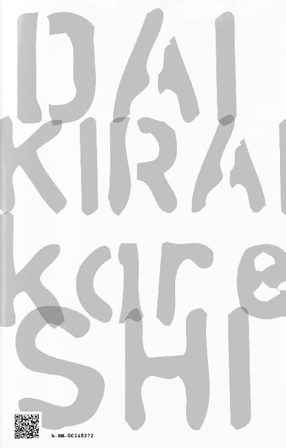

| 大嫌い彼氏 中編 | |
| 新矢イチ | |
| 壱屋books (2017) | |
「事故から目を覚ますと、大嫌いな天敵と恋人同士になっていて...」
少女漫画と彼女とエッチが大好きな高校男子、佐藤蘭。
ある日、事故に巻き込まれ目を覚ますと、大嫌いな元幼なじみ(男)と付き合ってることになっていた。
どうやら頭を打った衝撃で、天敵に告られ、なぜか好きになり、付き合っちゃうまでの3年間の記憶をごっそり失ってしまったらしい。
しかし、記憶を失う前の蘭は都合のいいセフレ扱いをされ、身も心もボロボロだった。その事実を全く知らない蘭は、再び同棲生活を始めることに。
本編はそれから一週間。山内と不用意に体を重ねてしまった事で、蘭の体に『ヤバイ』異変が起きていた。
さらにバイト先では先輩の滝と信頼関係を築く一方、山内と付き合うべきじゃないと言われる。
滝は、二人の過去を知っていると言い出してきて――。
佐藤蘭。健全な高校二年生。
好きな物は映画、彼女、少女漫画を読むこととエッチなこと。
嫌いな物（奴）は、元幼なじみの山内俳里。通称ハイジ。
顔は良いけど、他は最低な性悪男。大っ嫌いな天敵だ。
ある日事故に遭い目を覚ますと、その大嫌いな山内と恋人同士になっていた。
不慮の事故でエッチまでしちゃったけれど、蘭はまだまだ納得いかない。だってやっぱり嫌いなんだもん！ そんな二人の第二章。
＊
蘭は夢をみていた。思い出したくもない嫌な夢だ。泣きたいくらい山内に恋をしていた、過去の夢──。
八月の半ば。蒸し返すような熱帯夜で、その日も寝室は扇風機が一台のみ稼働していた。
（俳里、いつ起きるだろう）
穏やかな寝息の聞こえる真下で、蘭はずり下ろしたハーフパンツから、力ない男根を取り出した。
両手で包みこんだそれもじっとり汗ばんでいたが、気にせず愛おしそうに口づける。鈴口からぺろぺろと舐める。次第に硬度を増すと、喉を鳴らして奥まで誘導した。
『ん......っ。んむっ......、は、ん......んっ』
たっぷりと唾液を絡めて、舌を転がすように舐めずる。しゃぶる。穏やかな息づかいと相反して、それはジワリジワリとそそり立つ。
──初めての夜這い。
バイト中に届いたメッセージが原因だった。
『暑いからしばらく別々に寝よ』
付き合いだして、はや一年。最近になって、山内の態度が妙に冷たくなった。少し前から、些細な『違和感』は感じていたけれど......。
どんなに暑くても、去年は一緒に寝ていたのに。どうして急に？
久々のメッセージに胸を高鳴らせていたのに。読んですぐ絶望。もう営業スマイルも出来そうにない。
（俺、なんかした？）
自慢の恋人でいようと努力してきたつもりだ。
料理も毎日ルックパットを見て勉強しながら作っている。メニューだって、山内が『これ美味いじゃん』といったものを優先的に作っている。
エッチの時に不快にならないよう、ムダ毛のお手入れもきちんとやっているし、山内が『この子ボーイッシュで可愛いな』と言っていた雑誌のモデルと同じ髪形にしたりもした。
しかし頑張れば頑張るほど、態度が冷たくなっていく。
何か、怒らせるようなことをしただろうか。悩んでいた矢先に、追い打ちをかけるようにそのメッセージは届いた。
（このままじゃ俺、俳里に捨てられちゃう）
言いつくせない不安が蘭の胸に重くのしかかる。
（嫌だ、別れたくない。嫌だ......。だって俺、もう俳里なしじゃ生きていけない）
いつからこんなに好きになってしまったんだろう。最初はこんなんじゃなかった。むしろ蘭は追われていた方で、半ば強引な形で始まった関係だった。
男だし、もともと大嫌いな幼なじみだし。好きになるわけないと思っていたのに。
「う......っ」
グスリと鼻を鳴らし、今は懐かしい当時の記憶を思い出す。
最初はセフレのような関係だった。『こんなやつ好きになるわけない』と思っていたし、今までの仕返しに、適当に遊んで捨ててやろう、位の軽い気持ちだった。
しかし。一週間、二週間、一月と過ごすほど、居心地が良くなってしまった。
いつしか仲たがいしていた事も忘れ、山内と遊ぶことも多くなった。中学は別々だったから、近くのゲーセンで待ち合わせして遊んだ。
休日はカラオケに行って買い物をして、スタバから山内の家に直行。部屋で雑誌を読みながらゴロゴロ。
いつだれの新曲が出るだとか、このベースの着てる服が欲しいとか、ゲームの攻略方法とか、話してるうちに目が合って。言葉もなくキスをして。押し倒されて、服を脱がされて。リードされるままエッチして......。
ちょっと遊んでやるつもりだった。千夏がいたけれど、浮気だとも思っていなかった。ただの復讐のつもりだったから。
けれど、自身さえ気付かぬうちに山内に溺れてしまった。
いつしか会えない日は、青空がよどんでみえた。ほんのちょっとでいい。アイツの声が聞きたいと思った。
見つめられると、胸が熱くなってドキドキして、もうどうにでもなれって思った。
『お前さ、今でも先輩らとセフレ続けてんの？』
ある時、ずっと気になってた事を思いきって聞いてみた。
『何で。お前がいるのにするわけねえじゃん。まあ、隣は相変わらず寂しいけどな？』
『ふーん』
（そっか。今は俺としかエッチしてないんだ。......良かった）
『なに。俺のこと少しは興味持ってくれた？』
『......別に。そういうので聞いたんじゃないから』
本当はあのとき、蘭はもう自分の気持ちに気付いていた。
毎日会いたいと思う理由を。傍にいるだけで、胸が焦がれる衝動を。もう、自分以外のだれとも体を重ねて欲しくないと思う、その訳を。
居心地がいいと思っていた体温は、いつの間にか無くてはならないものになっていた。
独占したい。傍にいてほしい。
この気持ちを、いまさら取り消すことなんて無理だった。
それから二週間。登下校は相変わらず山内と一緒で、その日も橙色の通学路を肩を並べて歩いていた。何を話してたっけ。くだらないことばかりで、あまり覚えていない。
『......ねえ、あの時のお前の言葉、今でも信じていいの？』
『なに？』
『だから！ 俺のこと好きって......、あーもうやだっ。やっぱやめた』
『そこまで言って止めないでよ。ちょう気になるんだけど』
何やってんだ俺。
今さらどうにもならない状況に追い込んでおいて、そうなってしまったことにすら後悔。困り果てて頭をわしゃわしゃ掻くその姿を、山内は瞬きもせず隣で見つめていた。
『そんなん、全然、すげえ好きだし。最近は普通に友達っぽい態度とってるけど。お前の事、一度も諦めたことないから』
『......それ、本気？』
蘭は尚も問い詰める。本気で真剣に、山内の気持ちに変わりはないのかと。
『当たり前だろ』
『んなこと言って、遊びとか』
『なわけねえだろ！』
即座に捲し立てるような返答。しばらく二人の間に重苦しい沈黙が流れる。ほんの数秒程度だったが、ひどく長く感じた。
『......別れてきた』
『え？』
独り言みたく蘭はポツリと言った。
『昨日、千夏と別れてきた』
なんだって？ 山内が呆けた顔で言った。
（聞き返すな！）
緊張とこっぱずかしさで動悸はバクバク跳ね上がり、握りしめた拳はじっとり汗が滲んでいる。顔が熱い。くそ、恥ずい......。と思ったら、山内はもっとすごい顔。両目を見開き、時間が止まったかのように静止。足だけは変わらずアスファルトを踏みしめていて、なんとも滑稽だと思った。
『俺が女扱いされるのはまだ不服っつか慣れねーけど。ヤるときなんかこっぱずかしいし......っ。でも、そんなん差し引いても、山内じゃなきゃ、やなんだよ、色々......』
そっぽを向いたまま、唇を尖らせてそう一言。多分いま、耳が真っ赤だ。
『蘭』
とうとうその場に立ち止まる。
『な、んだよ』
声がうわずる。そして、絶対変な顔してる。
山内の横長い三白眼は、そこに蘭を閉じ込めたまま。
何で山内。何で男。なんでコイツだったんだ。
いろいろな言い訳を捜しながら、照れ隠しをせずに話を聞いてくれる所も、らしいなと思ったり。多分、馬が合うというか、お互いちょっとロマンチストなんだろう。そのちょっとの価値観の差が、山内はよく似ているから心地いいのだ。
自然と距離が近くなる。顔と顔が、次第に引き寄せられる。二人にだけ存在する引力があるかのように。
唇に柔らかさを感じた時、蘭は自ずと両手を首に絡ませた。
『ありがとう』
『......俺こそ』
『おう。そういう所もすごい好き』
『......」
『マジで好き』
『分かったから』
山内の気持ちは、もう痛いほど伝わっていた。
『なあ、俺達、きちんと付き合おう』
『......いいよ』
周囲の目を気にしつつ、たくさんキスをして。飽きるほど好きだと言われた。
お互いの肩に頭をもたげ抱きあい、この優しさも、安心感も、今日から俺のものだと、密やかに幸せをかみしめる。
想いが通じ合ったこの日は、もしかしたら、蘭が一番幸せだった日なのかもしれない。
『......っふ、ん......っぅんん......』
あれからもうすぐ二年。見違えるほど冷たくなってしまった彼氏の下腹部に顔をうずめ、ようやく勃起も様になったそれを慰める自分がいる。
（俺たち、どうしたらあの頃に戻れるんだろう。どうすれば、俳里はもう一度振り向いてくれるんだろう）
本当は、こんな自分がみじめで仕方ない。
楽しかったあの頃を懐かしむうち、ジワリジワリと熱いものが込み上げてくる。
『......っに、してんのお前』
『は、いり......っ』
目を覚ました山内は、いかにも迷惑そうに、寝込みを襲う蘭の姿を見下している。
『俺、疲れてるんだけど』
ついで放たれた冷たい言葉に、鼻の奥がツンと痛くなる。
押し黙っていると、今度はため息。
『そんなにヤリたいの？』
（違う......）
どうしたんだよ？ って聞いてほしかった。前みたいに、興味をもって欲しくて......。
『......いいよ。早く服脱げよ』
無造作に頭を持たれ、口からズルリと勃起が抜け出た。
『あ......っ』
『さっさとヤッて寝たいから、早くしてくれない？』
『は、いり......っ』
『セックスしたいんだろ』
サイドボードから取り出したコンドームを取り付けながら、目も合わせずにふてぶてしく言う。
『う......っ』
とうとう、蘭のつぶらな瞳から大粒の涙がこぼれ落ちた。
Ｔシャツ一枚に下半身だけ剥きだして、四つん這いになった蘭の体を、感情の知れない分身が貫く。
何度も、何度も。
『あっ......っう......グスッ......うっうう......』
生理的な快感はあった。抜けては挿さるたび繰りかえし。でも全然気持ち良くない。ただ体が前後に揺れるだけ。
『蘭......っ』
山内は、ときおり名前を呼びながら腰を穿った。今思えば、その言葉のなかに、彼なりの想いが隠されていたのかもしれない。
だけど、あの時あの瞬間、蘭の胸に駆け巡っていたものは、深い喪失感、ただそれだけだった。
＊
朝。天気のいい朝だ
秋分の日の今日は、まだまだ夏日の模様。やたら蒸し暑い。
「うーん」
蘭はもぞつきながら片目を開ける。
窮屈だと思ったら、また山内に抱きしめられている。
ベッドに来んなって言うのに、起きたらいつもこの状態。しかしなぜだろう。今日はやたらムカムカする。
「チッ」
よくわからないが、この顔を見るだけで、はらわたが煮えくり返るほど怒りを覚える。
ただでさえ、ここ数日は体の異変に悩まされて機嫌が悪いのに。
原因は一週間前。千夏に催淫剤を乱用された揚げ句、頭がおかしくなって山内とエッチしてしまった、あの悲劇のこと。
あの日から山内に触れられると......。
「おわっ！」
突然ほわんと山内の手が尻に触れた。おかげで『催淫剤の悲劇』は、いったん記憶からなりを潜めた。
にしても、眠ってるわりには、やけに動きが意図的である。
尻であると認識しているかのような指の動き。
きゅっと引き締まった双丘を揉みしだくように、指先がうごめく。
「くっそ、勝手に人のケツ触んなよ変態！」
今日はそこに原因不明の怒りも加わっている。発散先を探してガツガツとふとももを蹴りつけるうち、
「......ったいんだよ猿コラ」
まぶたをしっかり閉じた山内が唸った。
（こいつ、やっぱりタヌキ寝入りしてたんじゃねーか！）
「お前、卑怯だぞ！ 寝てるフリしやがって、このムッツリ野郎！」
「は？ 今起きたんだよ」
嘘つけ！ と蘭が吠える。
ようやく開いた三白眼は、寝起きにしてはらんらんと輝いている。
「お前って、寝てるときだけ素直だよな」
「けっ、今だって十分素直だろ。お前なんか嫌いだって面と向かって教えてやってんだから」
「はっ」
こっちはこっちで、蘭の毛嫌いに耐えうる免疫ができた様子。
「お前、夜泣きしてたんだよ。俺が来たら両手だしてすがってきてさ。まーかわいいかったなあ」
「嘘つけ！ 俺がお前にすがるわけねーし！」
「すがってた。てかキスもした」
「はあ!?」
「それに、お前もしっかり反応してたし。ああ、今もか」
確かにむっくり出っ張っているその尖端を、布越しにツイ、と撫でられる。
「やっ！ やめろ！ もういい起きる！」
「やだね。お前に拒否られまくって、こっちは爆発寸前なんだから」
奇妙な猫なで声を発すると、首の少し後ろを甘がみされる。
「あほ！ やめろ変態！」
さらにハーフパンツの隙間から、起っきしたナニを直に触られ。
「もしかして感じた？」
「ち、違う......っ」
正直なところ、あの日以降、山内に触られると妙な気分になってしまう。
それが嫌で、ここ一週間はずっと避け続けている。が、逃げるにも限界があって、大体は好き勝手に触られるのがオチだ。
そういえば入浴中、勝手に山内が押し入ってきたりもした（その後ぶっとばしたが）。
あの日から事あるごとに、奴の魔の手が迫っている。
不本意なのは、それに若干、体が反応している事。
（まあ、だからって、それをやすやすと受け入れる俺じゃないんだけど）
「あー、休日の朝からバイトとかうぜえ」
「お前が入れたんだろ。てかもう一時間もないじゃん」
「よし、サボるか」
実際すっぽかすとどうなるか、先週でよく分かったはずなのに。山内は「続きやるぞ」とハーフパンツに手をかける。
蘭はとっさに叫んでいた。
「あっ、万里兄ちゃんから着信きた！」
「──え」
目に見えて分かりやすく、山内は硬直する。
「なわけねーだろバーカ」
蘭はへへんっと笑い、思い切りベッドの下へ突き飛ばした。
＊
悪夢のような出来事から一週間。現在の状況が少しずつ見えてきた。
学校から徒歩十五分圏内にあるアパート『緑丘ハイツＡ』が、二人の住処。高校進学時から同居している愛の巣らしい。
ボロがつく小汚いアパートで、内装もシンプルな一ＬＤＫ。
簡素ながらも、一応の調理器具がそろったキッチンに、ソファと小さなテーブル、それにテレビ台の簡素なリビングルーム。一応十二畳はあるらしい。
玄関から入ってすぐの小部屋は寝室。育ちざかりの男二人が暮らすには、少々窮屈ではある。
本当はいますぐ家に帰りたいんだけど、母親がやたら協力的で帰れない。
『喧嘩した位で家に戻りたいなんて言わないのよ。ほら、ハイジくんが待ってるんだから早く自分の家に帰りなさい』
蘭の家族が二人の関係を受け入れたのには、ある理由があった。
それは、高校進学を機に二人で自立していきたいと、家族に打ち明けたときの話。
『俺は蘭と、一生をともにするつもりでいます。本気です。お願いします。蘭を、俺に守らせてください』
山内は一切ごまかしもなく、蘭の両親の前で二人の現状を悠然と告げ、頭を下げた。
『格好よかったわよ、あの時のハイジくん。俺には蘭しかいないって、私たちの目をみてはっきり言ってくれたんだから』
（ゲロ）
将来を見据えた（らしい）言葉に、両親も二人を応援することに決めたという。
事実を知るうち、疑問も沸いた。
自分の記憶が、あまりに都合のいい所でぶった切られてる気がする。
なんで最後の記憶が中学二年の八月三十一日なんだ？ 山内と再会したのが、その二週間後の夏祭り。つまり、再会してから付き合うまでの記憶だけが、奇麗さっぱり消えている状態。
どうして再会前のことしか覚えてないんだろう？
それとも、再会後の記憶を覚えていたくなかった？
山内と付き合っていた記憶を消し去りたかった？
じゃあその理由は？
「うーん......」
理由が見当たらない。
やはり考えすぎなのか。
記憶をなくす前は、山内にぞっこんだったらしいし。
母親の言うとおりなら、『記憶を消してまで嫌いになりたい』理由なんて、存在しないはず。
それに山内の証言もある。
（アイツいわく、俺のことをめちゃくちゃ溺愛してたらしいし）
「分っかんねーな......」
「何がそんなに分かんねえんだよ、クソガキ」
と、そのとき後頭部にバシンっと衝撃。
「てっ！」
「おまえ、さっさと働けよ、時給下げるぞコラ」
憎たらしい山内のそれとよく似た声。蘭もはっと我にかえり、辺りを見回した。
そこには五百六十八円と表示されたレジと、袋に入れかけのおにぎり。目の前に客とおぼしき男性が立っている。
「あ、あれ......？」
さらに右手に箸、左手にお手拭き。某大手コンビニチェーンの青と白のストライプ柄のユニフォーム姿でぼーっとしている蘭を、どうしたものかと見つめていた。
「どうもすいません。まだ不慣れな新人なもので」
きょとんとしてるうちに後頭部を押され、ほぼ強制的に頭を下げさせられた。
直後、背後からレンジの温め終了を知らせる軽やかなメロディが流れる。
すると蘭の頭を抑えつけていた手がぱっと離れ、手際よく商品を袋に詰め始める。
「飲み物は別にしておきますね。いつもありがとうございます」
目線は三十センチ上。キリリと引き締まった口角を印象よく持ち上げたソムリエスーツ姿の男性が、完膚なき営業スマイルで「ありがとうございました。またどうぞお越しくださいませ」と頭を下げる。
やはり声のトーンや言い回しが、山内とよく似ている。巻き舌口調は特にそうだ。
「お前、俺に頭下げさせやがってコノヤロウ......！」
無事接客が終わるや、ぎろりと睨みをきかせる男は、唐突にトーンダウンした悪魔のような低音でささやいた。
今まで以上にこき使ってやるからな。覚悟しとけよ、と最後に付け加えて。
（げっ）
ほぼ同時に現実へ戻ったが、時すでに遅し。
その男は某大手コンビニチェーン店のオーナーであり、山内の実の兄でもある。ちなみに件の千夏事件で、繰り返し着信履歴を残していたのも、この男。
山内万里。十四も年上の三十一歳。通称万里兄ちゃん。蘭が最悪だと豪語する山内の性格を、二重、三重にも複雑に捻じった暴君。
そういえば昔、万里の名前を『やーい、バンビ、バンビ！』とあざけったばかりに、よくよく虐められたものだ。
しかしながら、彼の経営するこの店こそ、二人のバイト先であって。つまり、最悪なことにかの暴君バンビ兄ちゃんが、蘭たちの直属の上司ということになる。
「ばーか。仕事中に妄想してんなよ」
「あてっ」
ヒュンと補充用のジャーナルが飛んできた。隣のレジで一部始終をみていた山内が、それを投げつけたのだ。
（コノヤロウ......！）
「お前、横にいたなら手伝えや！」
「こっちだってお前のせいで客さばくのに必死だったし」
「嘘つけ！ お前、そこで欠伸してたじゃねーか！」
それを拾い、至近距離でぶん投げる。山内はいとも容易く片手で受け止めた。
「お前と違って余裕だからな。てか、何考えてたんだよ猿」
再びジャーナルが宙を舞う。丸いレシートの塊は、ぽこんと肩にぶつかった
「てえなあ！ 何考えてようが俺の勝手だから！」
「ふん。どうせ俺の事考えてたんだろ」
ふたたび拾って投げ返した丸い塊は、山内の手の中に吸い込まれていった。
「違うわ！」
「分かりやすいんだよ」
「違うし！」
「俺のこと意識してるクセに」
「ばっかじゃねーの！ 意識なんかしてねーわ」
ひゅんひゅんと二人の間を飛び交うジャーナルは、蘭の頭や肩にぶつかっては山内の手に戻っていく。
大人二人が移動するだけでも難儀な狭い空間で、実に奇妙なキャッチボールが繰り広げられていた。
「てめえらいい加減にしろよド阿呆が」
もちろん、そんな高校生二人のお馬鹿なやりとりを、バイト仲間から『鬼軍曹』とまで定評される万里が黙って見過ごすはずが無い。
さっきと比べようがないほど、強烈な巻き舌で迫りくる。
「佐藤！ お前、十八時まで残業しろ」
「ええ？ 何で俺だけ!? やだよ、せっかくの休みがバイトでつぶれちゃうじゃんか」
「仕方ねえな。俺も残ってやるよ」
普段は五分たりともサービス残業を許さない山内が、今日にかぎって珍しい。
「いや、お前は定時で上がれ」
「残業代いらないから、俺も残るって」
「いや。お前は帰れ」
万里がピシャリと突き返すように言うと、山内は反抗的な目を向けた。
「あのさ、そこまであんたに指図される筋合いねえんだけど」
「ド阿呆が。お前がアレを甘やかしてるせいで、いつまでたっても仕事覚えやしねえ」
「別に甘やかしてないだろ」
「フン。これだからガキは困るんだよ」
「は？」
「いいから帰れ」
一気に場の空気が悪くなる。
事態をさらに悪化させたのは、万里の次の一言だ。
「そういうな、自分の事しか考えねー所が甘いってんだよガキ」
「あのさ、俺が残って迷惑かかんのかよ」
「だから俺が迷惑だつってんだろ」
売り言葉に買い言葉。お互い人差し指を突き立てて、図体のでかい男二人が罵り合う。
「はあ!? 意味わかんねーわ。頭イカれてるんじゃねーの」
「ガキが」
「オッサンのくせに」
ここまで来ると、ただの兄弟喧嘩だ。
「いいか、ここは俺の店だ。だれをどう教育するかは俺が決める」
嫌なら辞めろよ。俺は全然かまわないから。挑発と思える言葉がとぶ。
高校生の二人が、一日三～四時間の勤務で月にウン万円を稼げる仕事など、他にない。コンビニ経営としても破格の給料に違いないが、身内という事で、実は他のバイトより優遇されている。これでは辞めたくても辞められるはずがない。
「今日付けで二人そろって辞めるか？」
「俺は、佐藤の残業には賛成ですね。辞められるのは断固反対ですけど」
最悪な空気を一蹴する、さわやかな声が聞こえた。そこにバイト仲間の滝がいる。
今日は十四時から夕方までのシフト入りらしく、爽やかに「おはようございます」とあいさつ。さらに蘭に向けて、にっこりほほ笑んだ。
「あ、おはよ」
「おはよう佐藤。髪、寝癖ついてるよ」
「え、どこ？」
「ここかな」
後頭部に手をあて、髪を触る。
今日もシトラス系のさわやかな匂いが漂う。愛用するハンドクリームの香りらしい。
身長は百七十五センチくらい。細身でこげ茶のストレートヘアが特徴だ。
学年は一つ上の高校三年。自宅は隣町にあるが、店から近場の男子校に通っている。
世話好きなのか、何かと蘭の仕事を手伝ってくれる『良い奴』。
「蘭、こっち来い」
と思っていたら突然腕を引かれ、豪快に胸元にダイブ。
「なんだよ！」
「お前、本当最近フラフラしすぎ。自重しろよ」
「なにがだよ」
「いいから、こっち来とけ」
このとき蘭は知る由もなかった。山内と滝が、ひそかに互いを睨み合っていたことに。
時刻は十四時前。さっきまでそこにいたはずの万里は、なにやら携帯で話しこんでいて、次第に込み入る店の賑わいに気付いていない。シフト交代まであと一時間、蘭も山内もインしたばかりの滝も、食後のコーヒーを求めるサラリーマンの列をさばくのに必死だった。結局残業の話は、うやむやのうちに終了してしまった。
＊
昔から山内兄弟を知る蘭は、二人の仲の悪さを理解しているつもりだ。
歳こそひと回り離れているが、二人は非常に似かよった要素でできている。
身長はともに百八十センチ強。しし座のＡ型で誕生日も一週間違い。万里が八月八日で山内が八月十五日だ。
目つきの悪さも遺伝のようで、山内の横に長い三白眼を、もう少し切れ長にして黒目を小さくすれば、万里のそれになる。
しぐさやルックス、口癖までダブる二人は、本当によく似ている。
どちらもさして異性に興味がなく、短気で口が悪い。そのくせ、周囲に対する愛想だけは抜群。腹黒い野心家な所も同じだ。
それゆえ、対抗意識も強いのだろう。
そんな山内が、兄が経営するコンビニエンスストアでアルバイトをしているのは、結構な驚きだった。
『クソバンビ』『クソバンビ』『クソバンビ』『クソバンビ』......。
あの日、携帯に数分単位で残された着信履歴の羅列をみて、最初は何事かと青ざめた蘭である。
まさか自分たちが万里の店でアルバイトをしていて、しかもシフトをすっぽかして千夏に媚薬を盛られ、山内とにゃんにゃんしていたなんて。その時はまったく知る由もない事実だった。
結局、残業の話は本当だった。
悪夢のような時間はみっちり三時間半。
ついさっきまで真後ろに万里がつき、レジ打ちに接客に、言葉遣いから挨拶のひとつまで、口うるさく指導された。フランチャイズといえど、企業の定めたルールは存在する。『どこへ行っても変わらないブランドクオリティ』を提供できなければ、色々と問題になるのだとか。
バレなきゃいいんじゃない？ という訳にもいかず、この業界には『スーパーバイザー』なる企業のお目付け役が存在し、不定期に各店舗を見回って、違反はないかチェックしているという。
ああ出ればこう、という訳だ。
バイト終了まで残り十五分。
こんな安い時給でやってらんねえ、と一息ついていた所。隣で一部始終をみていた滝が「おつかれ」と声をかけてきた。
「佐藤、今日は大変だったね。よかったら、どうぞ」
こっそり手渡されたそれは、栄養ドリンクだ。
「あれ、これってすっげー高いやつじゃねえ？」
たしか、今月の推奨品。炎のイラストに『やる気漲る！』と黒文字がデカデカと印字された、いかにもサラリーマン受けを狙ったパッケージだ。ちなみに一本六百円。
これは本部が勝手に売り上げ目標を設定していて、在庫に関係なく週に一ケース納品される。
『コンビニはこういうのが一番やっかいなんだよな。うちじゃ売れる見込みもねーのに販促しなきゃなんねーし。キャンペーンで力抜いてると、ＳＶに目付けられるからな。そうなると後でもっと面倒なんだよなあ』
と、さっき万里がぼやいていたから、蘭もよく覚えていた。
陳列場所のおかげか数本売れていたが、こんなのよく買うなーと内心思いながらレジを打っていた。
「疲れに効くって書いてたから買ってみた」
滝はニコニコしながら、それを手渡してくる。
「まあ、最初はみんなあんなもんだよ。慣れるまで大変だろうけど、頑張れよ」
ポンポンとあやすように頭を撫でられると、張りつめていた糸がプツンと切れ、いろいろな感情があふれ出してくる。
「うう......、たきぃ」
思わず肩口に頭をもたげて甘えてしまった。
（こいつ、いいやつだな）
年上なのに（万里と違って）タメ口でも怒らないし、何より（万里と違って）優しい。
「俺も、佐藤がいるから頑張れるし。辞めないでよ、マジで寂しいから」
心身ともに衰弱しきっていた蘭にとって、まさに癒やしのオンパレードである。もっと言ってと蘭は内心、甘い言葉を催促する。
「滝はさあ、なんでこの店でバイトしてんの？」
「俺？ んー。何でだろう」
「お前くらい真面目で仕事できたら、ぶっちゃけもっといい所あるだろ」
なによりここは、悪徳バンビの巣窟である。『つべこべ言わず、俺の命令に従え』なんて、独裁主義も甚だしい。
それに、ポンコツ呼ばわりされる蘭と違って、何でもそつなくこなせる滝なら、きっとどこへ行っても即戦力になるはずだ。
「うーん......」
肩口にもたれかかる小生意気な後輩の頭をヨシヨシと撫でながら、何やら考え込んでいる様子。しばらくして、おもむろに口を開いた。
「強いて言うなら、好きな子が働いてるから、かな」
「好きな子？」
「そ」
蘭の目は途端に輝きを取り戻した。
「へー。なんか、意外だった」
「そう？」
「そういうのに興味なさそうだと思ったから」
「俺ってそんな風に見える？」
見える。あっけらかんと答えると、滝は肩を落とした仕草を見せる。
「そっか......」
「すげー偏差値の高い大学とか狙ってそうだし？ バイトの間に塾に通って、夜はずっと勉強してる感じ」
あと数カ月もすれば受験シーズンがやってくる。ただでさえ三年生は大変だろう。こんなにシフトを入れて大丈夫なのかと、逆に心配なくらいだ。
「佐藤は美化しすぎ。そんな事ないよ。俺、卒業したらこのまま就職しようと思ってるし」
「そうなの？」
「うん。実をいうと、万里さんに『卒業したらうちに来ないか』って誘われてるんだよね」
え、と固まること数秒。
「うち？ うちって、もしかしてこの店のこと？」
「そう、この店。まだ詳しくは言えないんだけど、しばらくは万里さんの補佐的な役割になるかな」
「やめとけよ絶対後悔するって」
幼い頃から万里の人間像をよく知っている蘭は、一片の躊躇もなく言い切った。
滝は、少し困った様子で笑う。しばらくして真顔に戻り、再び蘭をじっと見つめた。
「佐藤は、最近どう？ 山内とはうまくいってる？」
「は？ 山内？」
「万里さんから聞いたけど、アイツと付き合ってることも忘れちゃったんだって？」
「ああ......、うん、そう。ていうか、上手くいくわけないよね。俺、アイツのせいで毎日が最悪だから」
滝の口から山内の名前が出て動揺した。口ぶりからして、二人の関係を知っている様子。
滝と話すようになったのは、ここ数日のこと。一週間前は今と真逆で、目が合うどころか会話もなかった。「おはようございます」と「お疲れ様でした」の規則的な挨拶のみ。だからてっきり、プライベートな付き合いはなかったんだろうと思っていたのだけど。
「はは、最悪か。佐藤の口からそんな言葉を聞く日がくるとは思わなかった」
「なあ......。滝ってさ、もしかして記憶なくす前から俺と仲よかった？」
いくらバイトの同僚とはいえ、こんなこと、そうそう話せるもんじゃない。記憶をなくす前、滝とは親密な仲だったのだろうか。
でも最初のよそよそしい態度を考えると、そうでもないような......。
滝は俯いて表情を曇らせている。やるせないというか、感情を無理やり押し殺してる感じ。何か言いたそうだが、真一文字に締めた口は、それを頑なに拒否しているようにも見えた。
「......佐藤はさ、突然記憶をなくして、何も分からずここに居るわけでしょ」
「うん？」
「目が覚めたらさ、嫌いな男と付き合ってる事になってて。普通に考えてあり得ない現実をさ、どうして受け入れようと思えたの？」
「何でって......そんなの──」
そういえば何でだろう。
腰の痛みとか、仁科妹に話を聞かされたり、山内の告白だったり、親の証言だったり。
「分かんねえよ、そんなの。気付いたらこうなってたから、それで......」
滝は何が言いたいんだろう。もしかして、記憶喪失の原因に何か心当たりがあるのだろうか。
「じゃあさ、本当は佐藤は俺と付き合ってたんだって言ったら？ 信じてくれるの？」
「──え？」
思いもよらない言葉に眉をひそめる。滝はカウンターに隠れるようにして手を握ってくる。
「滝......？」
「佐藤の好きな人が、俺だったとしたら──」
「なわけねえだろ」
とつぜんカウンターの向こうから声がした。
「勝手に事実すり替えてんじゃねーよ腹黒」
振り向くより早く首根っこを掴まれ、ぐえっと変な声。
「ちょ、うえ、ぐえっ」
声の主はおかまいなしに、蘭をレジカウンターから引っ張り出そうとする。
こんなことをするあほったれがだれかなんて、考えなくてもわかる。
「や、まうぢ......っ」
見上げれば、やはりだ。横に長い三白眼は、ギロリと滝を睨んでいる。
「悪いけど、コイツは俺のモノだから。勝手に触んないでくれる。前も言ったと思うけど」
「おま......っ、なん、ぐ、ぐるじ......」
「てめえ猿コラ、ニヤついてんじゃねえぞ！ モノに釣られやがって、卑しい奴だな」
三時間も前に店を出た山内が、どうしてこの時間に店にいるんだ。しかも勝手に触るなとか、ニヤつくなとか、モノに釣られてとか、まるで千夏の時みたいに、どこかから覗いていたとしか思えない鮮明な発言だ。
「俺には寄るな触るなつっといて、滝にはこれかよ、なあ」
自称恋人は、どうやら滝との仲にご立腹の様子。たしかに、相手が山内なら即座に跳ねのけていた。
この一週間、蘭の刺々しい態度に辛酸を嘗めてきたからこそ、カウンターの下でまったりする二人が余計に頭にきた模様。
「な、なん......っごご......っ」
（お前こそ何でこんな時間に店にいんだよボケ！）
「ふん。ずっと待ってたからに決まってんだろうが」
山内は見事な読唇術で切り返す。この男、やはりどこかから蘭を見張っていたようだ。
「は......っぐあっ......ふげっ」
（勝手なことしてんじゃねーよタコ！）
離せとガツガツ脚を蹴っていると、たちまち鬼の形相に変化していく。
「お前、マジでいい加減にしろよ！」
「じゃあ、その手を離してあげればいいだろ」
そう二人の間に割り込んだのは滝だ。
「佐藤が苦しそうにしてるの、見て分からない？」
「あんたには関係ないだろ」
「ていうか、マジですごい毛嫌いされてるんだね。そこまで拒否されたら、俺なら立ち直れないかも」
カウンターを挟んで滝と山内が、なぜか火花を散らし合っている。数時間前と同じ状況。そこに、今回は蘭も加勢した。そうだそうだ、離せとばかりに、山内の脚に蹴りを入れる。
「ってえなあ猿！」
山内がチッと舌を鳴らして腕を引いた。蘭の華奢な体は人形のように反転し、されるがまま、背中からレジカウンターにぶつかる。
──静寂。
──静寂。
──長い長い静寂。
滝も、蘭も、山内も、だれの声も聴こえない。耳に流れるのは、軽快なジェイポップのＢＧＭだけ。
声が出せない。やめろ、とか。馬鹿野郎、とか。叫ぼうにも出せないのだ。
「う......っんんっ──」
一瞬、何が起こったのか分からなかった。
至近距離に、ギラギラ光る三白眼。その奥には、円柱の蛍光灯がこうこうと光る天井があって......。
（何だこれ。なんなんだよ）
どうにか頭を整理しようとするが、思考回路は滅茶苦茶のパニック状態。
しばらくして唇に触れる感触がジンジン熱くなる。ようやく、キスされているせいだと実感する。
「お、ま......やっ......」
カウンターに押し倒された状態。上から体重をかけられ、強引に自由を奪い取る。
「やだっ......やめ、」
まさか滝にのっかって挑発したくらいで、ここまで暴走するなんて。
（客、いま客きたらどうすんだよ）
コンビニで店員が、客とおぼしき若い男に襲われている。これは間違いなく通報される。もしくは万里の耳に入って想像を絶する怒りを買うか。悪ノリがすぎた奴なら、写真も撮られてＳＮＳで見世物にされるかもしれない。
いや、それよりも、もっと深刻な事がひとつある。
「......っなせよ......！」
（やだ......、滝が、滝がいるのに......！）
そう、ここにはすでに第三者、滝という名の目撃者がいるのだ。
ようやく打ち解けて来たバイト仲間。差し入れをくれ、労いの言葉をかけてくれ、「一緒にがんばろうね」なんて熱い友情を膨らませていた所。あろうことかその滝に、この有様を見られている。
「やだ......、はな、せ......っ」
無我夢中で暴れるが、ビクともしない。
強引に押し入った吐息が、蘭の嬌声に執拗に絡まる。やめろと声を上げれば、喉の奥まで舌が入り込んできた。
「ん──っ、ん、ン......」
同じ男なら、理解できるはずだ。
無様に組み敷かれる姿を男友達に見られて、蘭がどんなにか屈辱を味わっているかって事くらい。
「......っかやろう......っ」
と振りかぶった視界に、とうとう滝の顔が映り込んだ。
蘭を見ていた。目を泳がせながら、複雑な表情で。
形のいい唇を真一文字に結び、片時も視線をそらすことなく、山内にいいように扱われる蘭を見ている。
「う......っ」
ほんの数十秒の出来事。だけど実際は、その何倍も長く感じた。
（ああ、終わった）
力がぬける。あまりのショックで闘争心すら失ってしまった。抵抗をやめた途端、唇も開放される。
涙目で睨んだ先に、性悪男の勝ち誇った顔。
「お前、マジで最っ低......っ」
もう、屈辱でしかない。
「最低？ おまえが全部悪いんだろが」
こっち向けと顎をしゃくられる。嫌が応にも視線を合わされ。
「お前、俺の恋人だろ」
「だれがお前なんかと」
「俺のモノだろ」
「違うわ!!」
思い切り突き飛ばすと、手あたり次第に備品を投げつける。
「てめ、蘭!!」
もう、どうだっていい。滝に見られようが、人が来ようが、知ったこっちゃない。ただ、この男だけは許せない。何があっても、絶対絶対絶対に許せない。
「お前なんか、山内なんか、大っ嫌いだ馬鹿野郎!!」
接客が不可能なほど、カウンター内を滅茶苦茶に荒らし、一目散に店を飛び出した。
（蘭のやつ、タイムカードも押さず出て行きやがった）
モヤモヤと煮え切らない気持ちを噛み潰しながら、山内はついさっき蘭が出て行った自動ドアの前で舌打ちする。すぐに追いかけるべきだったろうか。しかし、出る杭はさっさと打っておかねば。滝のように図々しい相手であれば、なおさらだ。
まあ、蘭に手を出すなと釘をさした所で、予想通りの返答しか得られなかった訳だが。
『佐藤にかかわるな？ そんな事、山内に言われる筋合いないね。だれを選ぶかなんて、佐藤が決める事だろ。悪いけど少しでも望みがあるなら、俺は絶対諦めたりしないから』
真っ向から喧嘩をふっかけてくるあたり、また蘭に手を伸ばす可能性は否めない。しばらくはバイトの度に気が抜けそうもないと唇をかんだ。
「クソ、蘭のアホが......！」
滝はかつて蘭に横恋慕していた。
バイトを始めた動機も、レジにいた蘭に一目ぼれしたからだとか。ちなみにすべて、当時の蘭から又聞きした情報だ。
『俺、ちゃんと断ったから。俺の好きな人は俳里くんだけだって、滝くんにはっきり言ったからね？』
あの時、蘭の話にもっと耳を傾けていればよかった。滝のことは驚いたが、内心は自惚れていたし。
どんな恋敵が現れようと、蘭は絶対に心変わりしないという、根拠のない自信もあった。実際そうだったし。
まさかその数カ月後、蘭が三年間の記憶を全て失い、これまでと打って変わって山内を毛嫌いし、あげく滝とよろしくやってるなんて。そんな未来、だれが想定できるだろう。
「はあ......くそっ」
この一週間、山内なりに素行を改めてきたつもりだ。
蘭の目をみて会話するようになった。乱雑だが、一応の家事もこなすようになった。
暴言も吐かなくなったし、自分なりに大切にしている。
しかし蘭のほうは、「好きだ」と言えば「俺は嫌いなんだよバーカ！」とつっけんどんな態度のまま。
飯は一応平らげるが、相変わらず「くそまずい」と駄目出しの連発。それに、蘭と同じベッドで寝てようものなら、「どっか行けや！」と牙をむかれる毎日。
みじんも変化のない、最悪な日々が現状維持で続いているのだ。
いくら山内の精神力が強靭といえど、さすがに堪える。
蘭はほんとうに本気で、山内を嫌がっている。それを滝にまで見透かされたのが癪で、つい暴走してしまった。
その結果、見るも無残な惨敗。蘭には半切れで嫌がられ、あげく「お前なんか大っ嫌いだ」とまで言われた。
なによりあの顔。本気でキスを嫌がる蘭の顔。思い出すだけでヘコむ。
「......はあ、もう」
（このままだと、マジで滝に奪われる）
不安はますます膨らむばかり。
『俳里、待って......！』と後を追ってきた、あの頃の蘭とは違う。心の隅っこに残っていた、『慢心』や『奢り』を排除しなければ、本当に心を入れ替えて蘭に尽くしていかねば、本気で滝に負ける。蘭を獲られてしまう。
（あのアホ......、ヘラヘラ笑いながら滝に手を握られやがって）
どうすれば良かったんだろうか。どうすれば、気持ちを引きとめられるんだろうか。拒絶されるたび、ただ愛おしさだけが募っていく。
「なんでだよ。蘭のことすっげえ好きなのに、全然気持ちが通じねえ......」
まさに八方ふさがりな状況に、山内は完全に追い詰められていた。
山内が悶々と頭を抱えていたそのころ。一足先に帰宅した蘭も同じく、ある現象に頭を悩ませていた。
体の火照りが治まらない。唇もジンジンと熱く、山内の感触が、そこから離れようとしない。
（どうしよう。俺、すっげえムラムラしてるんですけど！）
「山内のタコ！ ボケナス！ くそ、くっそ！」
何度唇をぬぐえど、さきほどの記憶が脳裏でリピートを繰り返す。
ちょっとカサついた山内の唇。高圧的で執拗に自由を奪った、あの唇。
憎たらしいはずなのに、心臓がやたらドキドキしている。気が付けば、山内のことばかり......。
「あー、もうやだ......！」
ブツブツそしりながら、一目散に服を脱ぎ捨て風呂場へ直行する。蘭の核心部分は、隆々と直立していた。
「マジかよ......もうヤベえじゃん」
亀頭から、はやくも体液がぷっくりと滲んでいる。
山内のやつが、変なことするから。
山内のせいで......こんな目に。
「う......っ」
前回は媚薬を盛られたせいで、男でもいけたと言い訳ができた。
だけど今日は、しらふでキスをされ、この反応なのだから。大嫌いな天敵に。大嫌いな幼馴染に。
この屈辱を、山内にだけは知られたくない。だからプライドを捨てて、自慰で処理しようとしている起立したそれを握りこむ。、竿から頭へ、ゆっくりとした動きでマスターベーションを始めた。
裸の女の子......じゃなく、強引に唇を重ねる山内の映像が浮かぶ。
「おえ......っ」
早く忘れろと頭を振るが、記憶に刻まれた映像はなかなか消えない。
唇が滴に濡れるたび、感触が戻ってくる。ゾクゾクする。
「やだ違う！」
（これじゃまるで、山内に欲情してるみたいじゃんか......！）
蘭は心の中で吠える。
「くっそ、消えろ......！」
目眩すら感じる程の激しい葛藤が、理性をぐちゃぐちゃにしていく。
絶対に認めたくない。男のプライドにかけて認める訳にはいかない。
（俺、女の子が好きだもん。千夏のことはもうあきらめたけど、でも、山内なんかより女の子の方が断然ッ......！）
言い訳するように、必死で女体を想像する。友達の家で観たアダルト動画。エッチなお姉さんたちの、みだらな姿。
（そ、そうだ。あの頃は必死にチンコ擦ってたじゃんか俺！ 思い出せ、あの下半身猿だった時代を思い出すんだ！）
山内と入れ替わり、おっぱいや秘部をあらわにさせた裸体がぽんぽん浮かぶ。
蘭の股間は、とたんにしゅんと力をなくして項垂れた。
「えっ、うそ......？ やだやだやだ、すっげえムラムラしてんのに......っ」
当人までが青ざめるほど、みるまに萎える哀れな息子。
一刻もはやく抜きたくて、頭がおかしくなるほど苦しいのに、うまくいかない。どんなエッチな妄想を思い描いても興奮できない。
ボディソープを塗りたくった手で、懸命に手を動かしてみる。
──そのとき、玄関の方から音がした。
ついで数秒とまたず、浴室のドアが勢いよく開く。
「へえ。こんな時間から風呂かよ。さっさと一人で帰りやがって、いい気なもんだな」
突如侵入したのは、言うまでもなく山内である。
蘭はあおざめ、硬直する。幸いドアに背を向けて立っているため、奴が変な気を起こさない限りは、
「おい」
山内がずいと足を踏み込んできた。蘭は思いきり湯船のなかへダイブした。湯船が高潮のようにはね、向こうの壁までばしゃんと飛び散る。
「うわ！ てめ......っ何すんだよ！」
「テメーが勝手に入ってくるから悪いんだろ！ 出てけよ！」
ばちゃばちゃお湯を飛ばして威嚇する。「猿コラ......！」山内はすごく怖い顔をしてにらんできたが、関係ない。
こっちは必死なのだ。とにかく股間の惨状だけは気付かれてたまるかと。
「うわ、湯釜が泡だらけじゃねーか！ お前、一回出ろ」
袖をまくった山内が、とうとう服を着たまま風呂場に侵入した。
「な、なななんで......っや、やだし！ 俺が上がってからにしろよ」
これぞ野生の勘というのか。思いもしなかった行動の連発で頭はパニック状態。
「は？ アホか。こんな汚い風呂入ってたら雑菌にやられて死ぬぞお前」
「そんなんで死ぬか！」ばしゃんと湯を散らせば。「死ななくても病気になる」飛び跳ねる水滴を右腕でガードしながらチッと山内が舌打ち。
靴下をぬぎ、ボディータオルを拾い上げ。下半身の火種となった男は、どんどん近付いてくる。
「ほら、お前顔も真っ赤じゃねーか」
「早よ出ろ」風呂釜ににゅっと顔を覗かせ、脇に手をやると、軽々と湯船から抱き上げた。
ザバーッと持ち上がる蘭の裸体。
山内の視線は股間の位置で見事にとまった。
アンダーヘアが手入れされ、茂みすらないそこから、元気を取り戻した桃色の棒がにょきっと伸びている。
「蘭......風呂場でなにしてたんだよ」
バンザイの体制では、隠すことさえできない。自分の体をこんなにした諸悪の根源に、その一切を見られてしまった。言うに堪えない屈辱とはまさにこの事。
「俺の事は拒絶するくせに......、マジむかつくわお前」
湯船に浮いたボディソープと股間の膨らみを見て、山内は勝手に想像を膨らませた様子。視線も口調も冷ややかだ。
「俺だってやりたくてやってんじゃねーよ！ 大体お前が」
「は？ また俺のせい？ そうやって何でも俺にあてつけんのな」
「うるせーわ！ 俺が今どんな気持ちで」
「はっ。気持ちってなんだよ」
股間を一瞥。罵るような口調で吐き捨てる。
「山内、マジでこれ以上喋んな」
「何それ。滝とはよろしくやっといて。マジ自己中すぎんだよお前」
「──は？」
「今のお前ってマジ最低。いい加減にしろよ、下半身サル」
（こいつ......、俺の気持ちも知らないで）
「お前、マジで嫌い。大嫌い!! さっさと離せよバカ野郎！」
もう喚くしかなかった。言える訳ない。お前にキスされたせいでこうなってるんだなんて。
「この変態野郎！」「お前のせいで俺の人生はめちゃくちゃなんだよ！」「離せよ！ お前なんか大っ嫌いだ!!」
もうどうでもなれと、言いたい放題に叫びまくる。山内は蘭を抱えたまま、黙々と脱衣所に連れ出した。
「......そんなに俺が嫌いかよ」
「だからそう言ってんだろ！」
蘭がそう怒鳴ると同時に、頭にバスタオルが降ってきた。
「......あっそ」
他にはなにも言わず、ガチャンと風呂場のドアが閉まった。
あれから時刻は二十三時をすぎたころ。
ひとり寂しく食事をすませ、山内はだれもいないリビングのソファにゴロンと横になった。蘭はというと、寝室に閉じこもって一向に出てこない。ドアの前に置いていた食事は空になっている。今夜はメニューを変更してハンバーグ。前よりは上達していると思うし、少しは喜んでくれただろうか。一向に部屋から出てこないあたり、その望みも薄そうだが。
「......はあ」
いつもは窮屈にさえ感じる十二畳のリビングは、今日はやけにだだ広くて。
つけたままのバラエティ番組をボーっと見ていると、今となっては懐かしいあの頃を思い出してしまう。
そういえば、あの頃は何もしなくても暖かい夕食がテーブルに並んでたな。当たり前に蘭が食器を片づけて、山内はいつもソファで寛ぐだけだった。
洗濯物も、いつだって奇麗にシワをのばして畳まれたものが仕舞われていた。最近フローリングが埃っぽいけど、あれも蘭のおかげで、いつもピカピカだったんだな......。
知らなかった。
「家事って、こんな大変なんだ」
二年も同棲して、今頃こんなセリフが出るあたり、とことん駄目な男だと思う。
精神年齢が十四歳の蘭には、家事をする概念そのものがないから、全てを山内が引き受けざるを得なかった。
だが、その期間にしてまだ一週間。
時間にして一六八時間。過ぎさった日々と比べると、瞬く間にすぎない。
バイトに行って、帰ったら夕飯を作り、空き時間に掃除をして洗濯して、風呂の後は勉強。気付いたら爆睡。そして翌朝六時には起床し弁当を作り、合間に蘭を起こして身支度をしなければ......。
かつてないほど、毎日が壮絶に過ぎていく。反して一日は妙に長く感じた。しかし充足感はなく、二十四時間ではぜんぜん足りない。こんなハードスケジュールを、蘭は笑顔で毎日こなしていたのだ。テストも課題もたくさんあっただろうに、彼は愚痴をひとつも言わず、すべてを完璧にこなしていた。
今さらながら、頭が下がる。
「あー、あの頃が懐かしい」
いつもなら、この時間になると蘭の方から「俳里くーん」と寄ってきたものだ。
あの頃はその応対すら面倒臭くて、眠いだの、テレビを観終ってからにしろだの、いつも難癖をつけて避けていた。今思えば、蘭に対して申し訳なく、とても貴重な時間だったとすら思う。それも全て、『後悔先に立たず』であるが。
「あー、つらい」
ソファーに寝そべると目元に手をやり、風呂場の出来事を思い出す。
口喧嘩の末に先に帰宅した蘭は、あろうことか、隠れるようにして性処理を行っていた。
（あんなに溜まってるくせに、俺はとことん拒絶すんだな、アイツ）
それとも、自分が相手だと勃たないとでもいうのか。
（そういや、また『お前なんか大嫌いだ』って言われた。なんか、時間がたつほど嫌われていってる気がするんだけど）
──最悪だ。
＊
「今日は厄日だわ」
まだ午前の授業が終わったばかりなのに、妹はすでに疲れ切っていた。
元凶はあの二人。蘭と山内。
まずは山内が、朝一番にクラスに乗り込んできた。何やらヘコんでいる様子で、一限目が始まってもクラスへ戻ろうとしない。
「あー、辛い。また蘭に浮気された。信じらんねえアイツ。彼氏の前で男に手握らせるか、フツー」
隣の席を陣取って、口にするのはそればっかり。
「ちょっとハイジ、さっさと自分のクラスに戻りなさいよ！ 田中くんが困ってるじゃないの！」
「あ、別に大丈夫っすよ」
坊主頭の田中は教科書をもって別の席に移動していく。
「田中くん、ごめん、マジでごめんね！ もうハイジ！ アンタ本当に邪魔！」
「愚痴くらい吐かせてよ。他に言えるやついないんだから」
（この自己中、自滅しろ!!）
なんでも昨日、バイト先で蘭といざこざがあったらしい。蘭を狙ってる男がいるとかどうとか。そういえば、前に一度だけ蘭から聞いたことがあった。バイト先で、同僚のナントカくんに告られたとかどうとか......。
「はあ。俺昨日からすっげえ欲求不満。マジでなんなのアイツ。人の心をもてあそびやがって」
「蘭に直接いえばいいでしょ」
「言って逆ギレされたからここでぼやいてんだろ」
蘭のアホ。猿。本当なに考えてんだあの馬鹿。はあ、もう死にそう。アイツ見てるだけで頭おかしくなる。
余りにうるさかったので、途中で強制的に追いだしてやった。
ようやく周囲が静かになったと思いきや、二時限目の空き時間に、今度は蘭が教室にやってきた。
「なあ、山内しらねー？」
どうも山内を捜している様子。
「知らないわよ」
「ふーん」
蘭もまた、田中の席に座った。
ほんの小一時間前までハイジがそこに座っていたことは、話すと面倒だったのであえて伏せておいた。
蘭の方は終始落ち着きがない様子で、窓から廊下側を見渡している。
「どこ行ったんだよアイツ」
「何？」
「うん、なんでもない」
「何か用事だったの？」
とりあえず要件を聞いてみることにする。
蘭は面白くなさそうに、くしゅんと顔をしかめて「何でもない」と言った。
「じゃあ何で探してんのよ？」
「探してるわけじゃないけど......、昨日ちょっと」
「何よ？」
「別に......」
「あーっもう、はっきりしなさいよ！ ハイジに会いたいの、どうなの!?」
気になることはズバリ、ストレートに尋ねる性分の妹である。
「だ、だから会いたいとかじゃなくて！」
蘭は目に見えて動揺し、言い訳ばかり繰り返す。
「アイツなんか、居ても居なくてもどっちでもいいって思ってるし。ただ、昨日のこと、ちょっと言い過ぎたかなって思っただけで......、その」
（はっきり言えや！）
そこまで出かかった怒りの声は、蘭の携帯の着信音で掻き消されることとなった。
「ふぁい......。うん？ ああ、滝？」
（タキ？）
その名前に瞬時に耳が反応した。
確か蘭の言っていた『ナントカくん』も、そんな名字だった気がする。
「んーん。俺こそ昨日は変なとこ見せちゃってごめんな。本当気にしないで、ていうか忘れて。......え？ あ、うん。俺も来週の土日はシフト入ってる」
隣で蘭の話を聞きながら、もしやビンゴかもしれないと妹は思う。
「滝は？ ......あー、それじゃ俺らと入れ替わりなんだ」
その憶測が正解なら、タキは山内にとって恋敵となる相手。
その男と蘭が仲良く携帯で話をしている。
「え、土曜日？ いいけど......遊ぶの、俺と？」
（......タキが蘭を遊びに誘ったわ）
何食わぬ顔で頬づえをつきながら、内心耳をダンボにさせて話に聞き入る。
かつて蘭に告白したやつ。しかもバイト先で揉め事があったとかいう昨日の今日でのお誘い。
これは......、いまだに蘭を狙ってきてるとしか思えない行動だ。
「え、泊まりで？」
「......」
（ちょっと、まさかのお泊まり!? タキってもしかしてかなりの肉食なんじゃ......）
当の蘭はアホみたいにヘラヘラ笑って会話しているが、返事次第では、本当の浮気になりかねない。
「......あー、いいよ」
「え!?」
妹はようやく山内が悩む意味を少し理解した。
「ちょっと蘭、アンタ少しは自分の立場を考えなさい」
「何が」
「何がじゃないわよ！ アンタ、ハイジの彼氏でしょ。彼氏を放って他の男と外泊するってどうなの？」
「なんで？ 滝は友達だよ？ それにアイツ、すっげえいいやつだよ」
蘭は一生懸命にタキのいい人アピールをはじめる。
「仕事だっていろいろ手伝ってくれるし。俺が失敗するたび励ましてくれるし、俺なんかいつもバイトの悩み聞いてもらっててさ」
（それはアンタの事が好きだからよ！）
今度こそ心の声を叫びたい衝動にかられた。しかし、悔しいかな妹はまたもや我慢した。
滝と蘭の過去を話となれば、おのずと山内と蘭の過去にも触れてしまう。
実は山内が、蘭の気持ちも顧みない最低な彼氏だったと知れば、逆効果になりかねない。
（私が余計なことを口走って二人の関係をかき回すより、そっと見守っておいた方が無難だわ）
それに、あの山内が絶対に承諾するはずがない。何としても食い止めるはずだ。
結論、むやみに動かず、二人を見守ることで決着する。
（それにしても、面倒くさいことになったわね）
教室を出ていく蘭の背中を見送りながら、ため息は尽きることがない。
蘭はまだ周囲を見回している。と、階段のおどり場付近で動きが止まった。
「あ」
のっそり階段を下りるあの巨体、山内だ。
蘭に気付くや、表情を変えて近寄っていく。チラチラ目くばせなんかして。あの山内が珍しい、蘭の機嫌を伺っている様子。
二人は何やら話をしている。と思いきや、蘭が急にそっぽを向いて走り去ってしまった。
（やだもう、あいつらを見てると苛々する）
「もう、何でもいいから、さっさとくっつきなさいよ！」
妹の声は、またも始業チャイムの音色に掻き消されてしまった。
別に泊まる位いいよな、友達なんだし。五時限めの休み時間、蘭は着信履歴を眺め考える。
滝と遊ぶことになった。来週の土曜に。その日は朝から正午までバイトだ。
その日滝は早朝に割り当てられていて、終わったら迎えにいくから、そのままご飯でも食べに行こうよと誘われた。
そう言われると、まあ、こっちには特に断る理由もないわけで。
『いいよ』
『じゃあ決まりだね。土曜はそのまま泊まって帰りなよ。その方が時間も気にせず遊べるし』
『え、泊まり？』
そこまで帰りが遅くなると想定してなかっただけに、少し驚いた。
『駄目かな？』
『うーん』
『やっぱ山内に聞いてみないと無理かな』
一応付き合ってるんだよね？
その一言で、山内の顔が脳裏にポンと浮かんだ。
『は？ 泊まり？ ふざけんなよ猿！』
えらそうに彼氏面したアイツはきっと憤慨するに違いない。
『あー、いいよ』
ムカついてつい、軽くその場のノリで、土曜日は滝の家に泊まることになってしまった。
「別に、悪いことしてるわけじゃないし」
そう。ただ友達の家にお泊まりするだけのことだ。何も後ろめたいことなんてない。
何も......。
『アンタさ、もっと彼氏としての自覚を持ちなさいよ！ 相手が男だから大丈夫なんて油断しすぎよ。友情だってタガが外れることあるんだから』
「うーん」
妹の忠告は、考え過ぎだと思うわけで。
『だってアンタとハイジだって、もともとは幼馴染だったんでしょう？』
山内を例に出すから、交友関係までシビアに考えてしまうだけだ。あれが特殊な事例なだけ。普通に考えて、男友達と恋愛に発展する自体、ありえない。
（そもそもあの滝だぜ。いかにも女子にモテそうな、爽やか系代表の）
いつもいい匂いがするし、だれかさんみたいにすぐ怒ったりしないし、穏やかで優しい。あんな男子がクラスにいたら、女子が放っとくわけがない。
『お馬鹿！ もし本当にタキくんに狙われてたらどうすんの！ 部屋に上がったら逃げ場が無くなるよ？』
（だって......）
仕事も完璧で、彼目当ての客が来店するほど好感度も抜群の滝。まさに絵に描いたような王子様。どう考えても悪い人には見えない。
それに、自分はどうだ。仕事は失敗してばっかり。万里には『お前は進歩がなさすぎる』と毎回怒られ、あげくお客さんにまで気を遣わせてしまう始末。
「......」
（ふっ。無いな）
完璧な店のエースが、へなちょこバイトに好意を抱いている可能性は、限りなくゼロに近い。
「うん。ないない」
こうして仁科妹の『タキくんホモ疑惑』は、あっけなく抹消されたのであった。
今日も授業のあとにバイト。十六時から十八時までの三時間、山内とふたりっきりでレジに並ぶ。
昨日喧嘩してからほとんど口をきいておらず、究極に気まずい。しかも今日に限って万里は外出中。競合店舗の見回りとかで、終日店を開けているのだ。
客の入り具合も穏やかで、普段ほどピークタイムがやってこない。フライ商品のストック準備には、まだ早すぎるし。忙しいと売り場の手直しや商品出しに店内を動き回れるんだけど。数分おきにパラパラ来店はあるが、煙草とかコーヒーの注文ばっかり。
「なあ、今日の夕飯どうする？」
とうとう立ち読み客すらいなくなり、無言でレジに並び数分が経過したころ。山内が話しかけてきた。
「別に、なんでもいいけど」
気まずいので、正面向いたまま素っ気ない返事。
「......じゃ、鍋で」
「は、鍋？ それ以外にしろよ」
「なんでもいいってお前が言ったんだろ」
「九月に鍋はおかしいだろ」
ぽつりぽつりと話はじめると、いつもの言い合いが勃発。ああいえばこういうノリで、気付けば何もなかったように会話していた。
「じゃ最初から言えや」
ぽこんと頭をはたかれる。
「んだよ！」
と久方ぶりにケツにめがけてローキック。 なぜかちょっとだけ安心する。
「ってえな」
「俺、お前のおもちゃじゃないから」
「分かってるよ」
「ぜんっぜん分かってないんだよ！」
自動ドアが開いて、サラリーマン風の男性が店に入ってくる。罵り合う二人を見てか、男性客はすぐさま出て行った。
「分かってたら普通人がいる前であんなことしないだろ！」
「あれは......、お前が」
昨日のキス事件を出した途端、山内はうつむき加減に言葉を濁した。
「ほら出た、また開き直り。そうやって子供の頃から俺の足引っ張ってきたもんな、ハイジくんは」
「......なんだよ、その言い方」
「事実じゃんか。お前のせいでこっちは人生最悪なんだよ。昔っから俺の大事なものばっか奪ってきたくせに。好きとかどうとか言って、結局やってることは昔と変わんねーんだよ」
言えば言うほど、山内の額に皺が寄る。
「あんな所見せられたら......、好きなんだから仕方ねーだろ」
「仕方ないってなんなの？ お前には学習しようって考えが無いんだね。すっげー迷惑」
「そういう言い方ないだろ！」
つかみかかる勢いで山内が詰め寄ってくる。応戦して胸ぐらを掴もうとするが、勢いに押され、逆に追いやられる。
「待てよ、だから職場だってここ」
「そういう蘭は、何も感じねえのかよ!?」
「何が」
「今までの事を忘れてても、俺と一週間も同棲して、こんだけ一緒にいて、何とも思わねえのかよ？」
「思うわけないじゃん。何度言わせんの、俺、お前のこと大嫌いだから！」
山内は呆然とした顔で離れていった。やっぱり仲直り......なんて、出来そうにない。
「......だよな、ねえよな。好かれてるとか、マジでねえわ」
それから双方黙ったきり。店内は再び居心地の悪い静寂に支配された。
「佐藤、おはよ。今日はごきげん斜め？」
交替時間になって、シフトインした滝がレジに入ってきた。
「あ......、滝。おはよ」
滝は二人の微妙な空気に気付いているようで、隣でレジの担当者登録をしながら「大丈夫？」と目くばせする。「あ、おう」慌ててあやふやな返事。
「佐藤、そういえば明日も出勤だよね」
「おう」
急な欠員が出て、丁度いいからと万里に無理やりシフトを入れられたのだ。
「俺も出勤。よろしくね」
「こちらこそ」
滝はにっこりほほ笑み、顔を寄せると耳元でささやいた。
「来週のことも、明日話そうね」
「え......」
「おい、こいつ今何つった」
隣で一部始終を見ていた山内は、昨日以上に戦々恐々とした様子。
「別に、何もねえわ」
実は俺、来週滝と遊ぶんだ。しかも泊まりでね！
頭のなかで繰り返し流れていた文言が、言うべき時に出てこない。
「あるだろ。さっき耳元で何かささやかれてただろお前」
しかし山内はしつこく食い下がる。さっき蘭が、プレミアムアイスコーヒーの注文をホットコーヒーと取り違え、客の対応に追われていたときは、知らぬ存ぜぬの済ました顔で隣にいたくせに。
「何もないよ」
「嘘つけ。お前、俺に隠し事があるだろ、ぜったい」
「だから何もないって」
「佐藤、もしかして山内にまだ......」
蘭はなぜかわっと大声をだし、強引に山内の腕を引っ張ってカウンターを抜け出した。
帰り道、微妙な空気のまま、スーパーで食材を買って帰る。
ガサガサ揺れる袋の中には、牛乳と玉ねぎと人参、鶏肉。そういえばコンソメも買っていた。
今晩のメニューは鍋からシチューに変更か。山内の左手にぶらさがる買い物袋を見ながら考える。
「蘭」
山内がふいに手を握ってきた。蘭は反射的にそれを振り払う。
「いいだろ、人少ねえし」
と、またすぐに握られる。さっきよりもぎゅっと強く。
「やめろって」
今度はバシンッと手の甲をはたいて跳ねのける。
「......ほんっと可愛くねえ」
「てめーは自分の立場をもっと考えろよ」
「は？ 猿」
「ハゲ！」
「ああ!?」
二人は道端で互いを睨み合う。
「ほんっとコイツ」
「マジでお前」
ムカつくんだよ!!
ほぼ同時、絶妙な具合で二人の声が共鳴した。
夕飯は予想どおりホワイトシチュー。
ホワイトソースは焦げ付いていて、味がない。野菜はぶつ切りを優に超えた大きさで、その形も芸術性に富んでいる。その上煮込み不足で超硬い。スープはビックリするほどザラザラ、なのに水のようだ。
（うん。まずい）
この安定の低クオリティ。
キッチンで背中を丸めて悪戦苦闘していた姿は見ているが、あれだけ時間をかけて、なぜと言いたくなる出来栄えだ。
「残すなよ」
そういう山内も、引きつり顔で食べている。
「ねえ、なんで『シチューの素』使わなかったんだよ」
「それはお前のこだわりだろ」
「は？ 別にシチューにそこまでこだわってないし。普通に食べられりゃなんでも」
「なんでもない。悪かったな、大体こんな感じで作れるかなって思ったけど、俺には無理だったわ」
山内はそう言って、黙々と飲み込み続ける。
白いローテーブルが真ん中に一台だけの簡素なリビングルームで、バラエティ番組の賑やかな笑い声が響く。
（空気わる......）
「ねえ、俺って料理上手だったの？」
「すげー美味かった」
「シチューも？」
山内は少し黙って「滅茶苦茶おいしかった」と言った。
「ふーん。人って変わるもんだね。今の俺じゃ全然想像つかねーや。飯も掃除も洗濯も、全部母ちゃんまかせだったから」
「......ごめん」
俯いたまま、山内がポツリと声を漏らす。
「責めてるわけじゃないんだけど。俺も家事できないし」
「分かってる。そうじゃなくて、ごめん」
「何がだよ？」
尋ねど、山内は答えようとしない。
「......俺にはもったいないくらい、最高の恋人だったよ、お前」
「悪かったな、今の俺は最悪で」
スープを皿ごと一気に掻きこむ。
「ま、これはこれでいいんじゃない。自然の味で」
「ごめん、本当に」
「いいって言ってるだろ、もう......」
食べ終える頃には、怒りも大分納まっていた。
一週間前まで、二人はこの部屋でどんな風に暮らしていたのだろう。この歳で働きづめて、少ないお金で苦労して。それでも日々をともに歩んでいけることに、幸せを感じていたのだろうか。
「ふうー。ごっそさん。まず......と、まあまあだった、かな」
山内俳里という男を好きになって、幸せだったのだろうか。もしそうなら、未来の自分に申し訳ないなと思う。
その気持ちのかけらでも残っていたら、今日のシチューだって満面の笑顔で食べれたはずだから。
（そういや、ちっちゃい頃も何かと喧嘩してたよな、俺達）
食事が終わり、ソファにもたれてぼーっとしながら、過去に想いを馳せる。山内は食器の後かたずけが終わって、さっき隣に座った所だ。懲りずに髪の毛を触ってくる。いつもはやめろと跳ねのけるけど、今夜は面倒くさくて。そのまま触らせておいた。
「蘭、寝てるの？」
そういう事にしておこうかと、蘭はそっと目を伏せる。
前髪がサラサラと揺れて、男の手でも、思ったより気持ちがいい。
（悪い所だけってわけでも、ないんだよな）
大昔、山内が同じ幼稚園のタカシくんと大喧嘩したことがあった。最終的に山内がタカシくんを叩いて、先生に怒られていた。『蘭くん、蘭くんは、ぼくが悪くないって思うよね？』と聞かれて、『ぼくも俳里くんが悪いと思う』と答えたら、泣きながら叩いてきて。蘭も訳が分からなくって泣きじゃくって帰宅した。
そうしたら翌日、山内が母親に付き添われ、家に謝りに来た。山内の手にはポケモンのカード。蘭が一番大事にしていたレアカードで、先日幼稚園で失くしてしまったものだった。
『タカシくん、このカードがどうしても欲しいって言うから......。でも、ぼく、それ蘭くんのでしょって言ったら怒ってね......』
話を聞くと、タカシくんはレアカードが欲しくて、こっそり盗んでしまったという。それに気づいた山内は、口論の末、頭にきて叩いてしまったらしい。
『タカシくんが、これ、ぼくに返しにきてくれたの。蘭くん、ごめんね。ぼくのこと、嫌いにならないでね。ぼく、蘭くんが大好きだかりゃ......っ』
あの頃の泣き顔を思い出すと、今でも吹き出しそうだ。でも、自分のためにタカシくんと喧嘩をして、泣いてまで大好きだと言われたことが無償に嬉しくて。それからは前よりももっと仲良しになった。
泣いて、笑って、喧嘩して。思えば二人の関係って、昔っから変わってないのかもしれない。
コツン、と頭に重み。みれば、山内がこくりこくりと頭を揺らして居眠りしている。
「もう、しょうがねえな」
寝室からタオルケットを取り出してくる。蘭はまた山内の隣に戻り、お互いに掛け合うと、今度こそゆっくりと目を閉じた。
一日すぎてまたバイトの時間。夕方のピークがようやく去った店内は、数分前とくらべてガランとしている。デザートコーナーにＯＬ風の女性が一人と、立ち読み客が数人。
「佐藤」
ぼーっとしていると、滝に呼ばれた。
「ん、なに？」
「なんかボーっとしてるなと思って」
一八時の売り上げ報告レシートを出しながらニコリと笑う。
「あー、ちょっと考え事」
今日は覚悟していた割には万里の指導時間も少なく、のんびりと時間が過ぎている。深夜アルバイトの面接中で、業務のほとんどを滝に丸投げして事務所に籠っているのだ。
「今日はおもったより平和だとおもって」
「そうだね。レジも上手になってきてるし、余裕が出たんじゃないかな。そういや煙草の銘柄、番号で把握できてたね。偉い偉い」
「へへ。滝が教えてくれたからさ」
「それは佐藤の努力のたまものだよ」
注文を受けるたび『この番号はこれ。こっちはロングタイプもあるから、ちゃんとお客さんに聞いてね』とさりげないフォローがなければ、覚えるまでもっと時間がかかったに違いない。
「いろいろとありがとね。俺、本当滝のおかげでなんとかなってる」
「ううん。それは佐藤が毎日頑張ってるからだよ。オーナーもきっと認めてくれてるよ」
（そうかなあ）
蘭はこれまでの日々を思いだす。本気で鬱陶しそうに「いい加減仕事覚えろやポンコツ」と暴言を吐く万里の残像が浮かんだ。
「......いや、それは無いよ。俺すっげーウザがられてるはず」
「そうかな。俺にはそうは見えないけど。佐藤の考えすぎじゃないかな」
いや、間違いなく邪見にされてるよな、俺。
入れ替わりでシフトに入る事が多いから、滝には分からないのかも。
万里は確実に、他のバイトに比べて蘭にだけ厳しい。知り合いだから、贔屓のないように心がけてるのかもしれないが、目立った失敗じゃなくても怒られるし、言葉遣いや礼儀作法にまでケチを付けられる始末。正直、ウザいレベルを超えている。
「あーあ。滝が先生になってくれたらいいのに」
「お望みなら、他にも教えてあげるよ」
ふふ、と含み笑いで滝が言う。
「マジで？ ありがと。本当このまま頼っちゃおうかな」
滝はさらに笑顔になった。
「そう？ じゃあ今日なら時間外の補習も受け付けてるけど、どうする？」
「うん？」
補習ってなんだ。
「この後、良かったら俺の家に来ない？」
「今日？ うーん」
（どうしよ。バイト終わったら連絡しろってアイツに言われてるんだよな）
積もる話も確かにあるが、少し気が引ける。
「どうしよっかなぁ」
「何ブツブツ言ってんだお前」
サボってんじゃねーぞ。突然後ろから怖い声が聞こえて、頭をバシンとはたかれた。振り向けば万里がいる。
「いっ......！ な、なんだよ！」
「あのな、研修だと思って気を抜いてんじゃねーぞ」
お前だけ時給さげてやろうか、ええ。
万里はふたたび蘭の頭だけバシンとたたくと、指さしてそう言った。もはやオーナーとは思えない横暴ぶりだ。
「ほら、な。見ただろ滝！ いつもこうして俺だけ差別するんだぜ。本当扱いが雑なんだよ！」
「あ？」万里の右眉がピクリと動いた。
「お前な、いちいち卑屈に捕らえてんなよ。サボってるやつのケツあおって何が悪いんだよ。 少しは滝を見習え。店が暇でもちゃんと働いてるだろうが」
横を向くと、ちゃっかりお手拭きの補充をしている滝がいる。
「さっきまで滝も俺と一緒に話してたもん！」
「あはは」
滝が笑う。
「うわ。同僚を売るか普通。最低だなお前は」
万里はさめざめとした顔で、来月から時給マイナス五十円だな言った。
「それで、この後どうする？」
「えー......っと」
無事にアルバイトも終わり、時刻は十九時をすぎた頃。
寄り道をすると、帰りの電車は少なくとも二本は遅れるだろう。
帰宅が二十一時を回ってみろ。アイツのことだ、どこで何をしてたんだと、帰宅までの一部始終を問いただすに違いない。
「山内のことが気がかり？」
「あー、うん、まあ......」
ちなみにさっき携帯を確認したら、もう四件もメッセージが届いていた。今日はきつく言ったから、さすがにどこかから見ている事はないと思うのだけど。
『着いたら連絡しろよ』
『着いたのか？』
『ちゃんと連絡しろよバカ』
『とりあえず連絡いいからこれ読んどいて。滝に無駄に近付くなよ。分かった？』
『終わったら連絡して』
最後のメッセージが送られたのは三十分前だ。
「ごめん、やっぱ今日はやめとく」
「ん、分かった。じゃあ駅まで送ってく」
「いいよ別に」
歩いてちょっとのとこだし大丈夫と首を振るが。
「俺の家も駅の近くだから、それくらいはさせて」
ほら、佐藤みたいな男の子が、一人で夜道は危ないでしょ。ブルーのトートバッグを肩に掛けなおし、滝は冗談めかしに言った。
電車の到着時刻に合わせ、二人でのろのろと夜道を歩く。
取り留めのない会話もそろそろ尽きた頃。思い出したように、滝が呟いた。
「記憶がなくても二人の関係性ってあんまり変わってないんだね」
「え？」
「なんか、佐藤って昔から山内に振り回されてばかりだと思って」
「振り回されてた？ 俺が？」
なんのこと？ と尋ねるが、滝は横顔を向けたまま。かみしめた口元は、感情を抑えているようにも見える。
「やっぱり、佐藤にはなんにも話してないんだね。まあ、無理もないか──」
滝はさっきから何を言ってるんだろう。
滝の顔がようやくこちらを向いた。
細くて女性的だと思っていた両眉は、皺が寄って怒っているみたい。
なぜだか不安な気持ちがつのる。滝の目が不穏に光っているせいだろうか。
「滝は俺らの事、どこまで知ってんの？」
「やっぱり、この話はやめよう。急にごめん」
まだ言うべき時じゃないと、意味深な言葉をつぶやく。
「ところで佐藤、学校はどう？」
何事もなかったように話題が変わる。
「う、ん。もう全部ちんぷんかんぷんでさあ、困っちゃうよ。現国と理科くらいは付いてけるんだけど」
「ああ、そうだよねえ」
「あのさ、滝」
そのとき、胸ポケットの携帯が震えた。
「着信、山内から？」
「あ、うん」
「電話、出た方がいいよ」
先日の事もあってか、滝は通話に出るよう促してくる。
「いや、いいよ、放っとけば」
「心配するから出なよ」
「でも......」
「俺の家、この近くだからもう帰るね。今日は急にごめん。それじゃあね」
滝はそれだけ言うと、さっさときびすをかえしてしまった。
蘭はしばらく画面を見つめる。通話ボタンに、なぜか指が向かおうとしない。滝の言葉が引っかかっている。もしかして、自分の知らない過去があるのではないか、と。
滝はどうして、あんなことを言ったんだろう。
そのうち着信が切れる。 一拍おいて、今度はメッセージを受信する。
『蘭』
『何かあった？』
『大丈夫か』
焦っているのか、単調なメッセージが数回にわけて送られる。
『残業で遅くなりそう』
しばらく迷ったのち、嘘のメッセージを送信する。
後ろめたさもあったけれど、知りたい欲求には勝てなかった。
携帯を再び胸ポケットに戻すと、すぐさまきびすをかえす。
街灯の明かりが目に射しこんだ。薄暗い歩道の数十メートル先に、見覚えのある後ろ姿がうっすらと浮かんでいる。
「滝、待って！」
走りながら背中に向かって声を張る。
制服の上に紺色のカーディガンを羽織り、ブルーのトートバッグを肩にかけた男子は、静かに振り向く。
街灯の薄明かりでは分からなかった。その時、滝がニッコリほほ笑んでいたことに。
「あ、おじゃましまーす」
「何か軽く作るから。佐藤は好きにくつろいでて」
部屋の入り口にあるポールハンガーにバッグをかけ、滝は隣のキッチンへ向かった。
「あー、うん。ありがと」
蘭はリュックを手前に持ち直し、言われるままソファに腰をかける。
（うわ、座り心地が全然違う）
白と黒で統一されたリビングは、整然として落ち着いた雰囲気が漂っている。
目の前には大型テレビとスピーカーセットが、壁面のキャビネットに等間隔でディスプレイされている。
なんとも大人びた部屋だ。キッチンと対角の方向にもドアが付いている。あっちは寝室だろうか。
高校生の一人暮らしにしてはかなり裕福な二ＤＫ。
外見も奇麗なマンションだった。
クラシカルなレンガ調の外観もさることながら、エントランスからオートロックの万全セキュリティ。その五階建ての五階が滝の部屋。
生活費はどうなっているんだろう。
週五日ペースでシフトに入っているから、他にかけもちも無理そうだし。
しかしコンビニエンスストアの安月給では、間違いなく生活が破たんしてしまうレベルだ。
二人分の給料をもってしても生活費はギリギリだと山内が嘆いているほどなのに。
「滝って一人暮らしはじめて何年？」
「二年半くらいかな」
はい、とテーブルに置かれたのは、市販のカップスープだ。
「二年半？ げろ。よく耐えられるね。家に帰りたくならない？」
「うん。全然」
テーブルを挟んで正面から、滝が一片の曇りもない笑顔で頷いた。
「佐藤は家に帰りたい？」
チュルチュルと春雨をすすりながら滝が尋ねてくる。
「うん。俺家大好きだもん」
蘭も春雨をズルズル吸い上げながら答えた。
「家族の人と仲いいんだね」
「うーん。滝は家族と仲悪いの？」
ズバッと聞くと、一瞬、へんな間ができた。
「そうだね。あまり好きじゃないかな」
滝はカップを両手で持つとゆっくりテーブルに置いた。つくづく動作に品がある。
「俺の場合、家族なんて建前だから。自分の事しか考えないあの人たちを見てると、無性にむなしくなる」
「ふうん......」
滝の目は少しも笑っていない。
「佐藤は、家族の嫌な所が見えてうんざりすることってない？」
「うん。ないかな。だって俺、おやじも母ちゃんのことも大好きだし」
父親とは小さい頃から単身赴任でほとんど会えないけれど。
お父さんは家族のために一生懸命働いてくれている。そう聞いていたから、会えない分だけ感謝するようになった。
「子供の頃はそれなりに苦労もしてきたけどさ。俺は何不自由なく育ててもらったから。寂しかったこともいっぱいあったけど、それより親として尊敬してる気持ちのが強いな」
母ひとり子ひとり。まるで母子家庭のような環境で育ったせいか、母親との信頼関係は人一倍強いと自負している。
「母ちゃんの飯はちょー美味いんだよ。特にハンバーグ。もうふわっふわで最高なんだって」
「......佐藤」
「うん、何......」
その顔が間近に迫ったと思いきや、その腕のなかに抱きしめられていた。
部屋の匂いがふわりと揺れる。背中に腕を回され、包みこみようにぎゅっとされる。
「佐藤って、本当にいい子だね」
俺、マジで佐藤のこと好きになって良かった。
けど──。
洋服の擦れる音にまざって、滝が何かいった。でも、よく聞こえない。
「な、何」
圧し掛かられた重みで、体がだんだん後ろに傾いていく。
危ないと思ったときは、もう手遅れで。抱き付かれたままフローリングに倒れ込んでいた。
「た、滝」
「ごめん、急に。なんか、世の中って不公平だと思っちゃって」
肩口に顔を埋めたまま、滝が言う。
「俺、やっぱり佐藤は山内と付き合うべきじゃないと思う」
ずっと疑問だったんだ。どうしてこんないい子が、あんなに振り回されて傷つく必要があるんだろうって。
「え？」
「俺がこんな事言える立場じゃないんだろうけど、佐藤は今の方が、断然いい顔してる。やっぱり、笑ってる方がいいよ」
「滝。言ってる意味が分かんない。山内と俺が、何？」
いつしかその目をじっと見つめ、問いかけていた。
「ねえ、知ってるなら教えてよ。俺とアイツは、普通の恋人じゃなかったの？」
「──あのね」
しずかに開いた滝の口元を、蘭は瞬きひとつせず、じっと見つめた。
映写機から流れ出た画面のように、左から右に、日常風景がゆっくりと移動する。蘭は、それをぼんやりと電車のなかから眺めていた。
「佐藤」と隣で声がする。
滝だ。帰り道が心配だからと、一緒に電車まで乗り合わせてくれた。
大丈夫だって断ったんだけど。滝も用事があるっていうから、つい好意に甘えてしまった。
「良かったら、家まで送るよ？」
「ん、だいじょぶ、ここからチャリで帰るから」
「そう？」
時刻は二十一時をすぎるころ。あれから三時間も残業していたなんて、あいつが信じるだろうか。
「......」
信じなくても、もう構わない。喧嘩上等。こっちはムカつきがおさまらないのだ。
滝の話を聞いてから、気分は最悪。聞くんじゃなかった、山内との過去なんて。
『佐藤は、ずっと山内との関係に悩んでたよ。記憶をなくす前にさ、一度だけメールがあったんだ。もう苦しい。俳里と別れたいって──』
恋人なんて名ばかりで、実際蘭は、パシリとして利用されていた、らしい。
しかも、ぞんざいな扱いを受け続けて、恋人関係を絶ちたいとまで思い詰めていた。
『あ......はは。嘘じゃん』
『嘘、だったら良かったよね。そうしたら、佐藤はきっと記憶喪失になってないと思う。俺の勝手な憶測だけど』
ニコリともしない強張った顔。とうとう蘭からも笑顔が消えた。
『佐藤さ、携帯にメールの記録とか残ってないの？』
『ああ......、うん。なんかラインとか Twitterやってたぽい跡はあるんだけどさ、山内とやりとりした奴はほぼ消去されちゃってんだよね』
『山内の方は？』
『え──』
山内の携帯なんか、一度も気にしたことがなかった。
どうして今まで気付かなかったんだろう。
答えは簡単だった。
今までは、二人の過去なんか見る必要もなかった。興味すらなかったから。
嫌いなままでいれば、少しも心を開いていなければ、過去を知りたいと思うこともなかったし、これからもどうでもよかったはずだ。
何とも思っていなければ。
蘭は奥歯を噛みしめる。
脳裏に浮かぶのは、懸命に家事をこなそうとする後ろ姿。目の下に隈を作ってまで弁当を作る、猫背な横顔。あれが全て偽りの姿だと、どうしても信じられなかった。
ドアノブをひねり、そっと部屋の中へ入る。
明かりは点いているが、人の気配がしない。キッチンもリビングも、ガランとしている。
二人掛けのソファには、脱ぎ散らかした制服がそのまま放られていた。
すぐ下のフローリングに、山内がいつも肩にひっかけてるメッセンジャーバッグが転がっていた。
ファスナーが開いていて、中の持ち物が散乱している。テーブルの上には、まだ手を付けていないお茶碗や食器が重ねて置かれたままだ。
何気なくバッグを拾い上げる。
（あるわけないよな......）
ごそごそ漁っていると、コツンと当たる感触。
（あった......）
手のひらサイズのスマートフォンを取り出す。
普段は片時も手放そうとしないくせに。よほど焦っていたのか、バッグの中に放置されていた。
「......」
見たい。
だけど人の携帯を勝手に見るなんて。人としてやっちゃいけない事。
わずかにのこった理性が引き留めようとする。
「......」
でも見たい。
いや駄目だ、駄目っ。他人の携帯見るとか、そんなん人としてやっちゃいけない事だってば。
「......」
でも、見たい。すごく見たい。
真っ黒い画面の向こう側が、気になって気になって仕方ない。
知りたいんだ。
滝の口からじゃなく、ちゃんと自分の目で確かめたい。
本当の関係を──。
自分の目で確かめて、安心したい。
あと一度だけ、彼を信じてもいいと納得したいから。
ホワイトメタリックの精密機械は、蘭の手中で静かに青色の光を灯した。
メッセージは、やはり残されていた。
たどることができたのは、数カ月前の記録から。一日数件の蘭からのメッセージに対し、返信は日に一度か二度だけ。
それをしばらく目で追う。蘭はすぐさま絶望する。滝が言った通り、文面をみただけで、恋人らしくない二人の奇妙な距離感が見て取れたから。
一月某日。蘭よりメッセージ数件。
『俳里くん、あけましておめでとう。これからもずっとずっと大好きだよ！ 今年も楽しい思い出をいっぱい作ろうね』
『俳里、もう寝てるかな。今年も一緒に初詣に行くよね？』
『ねえ、会いたい』
『やっぱり今から家に帰ってもいい？』
『俳里......』
数十分後、山内より返信一件。
『今何時だと思ってんの。てか帰ってきたら実家戻ってる意味ねーじゃん』
直後、蘭より返信数件。
『ごめんなさい。俺、わがままばっか言ってるね。ごめん』
『俳里、本当にごめん。もう二度と自分勝手なこと考えたりしないから』
『連絡待ってるね。おやすみ。大好きだよ』
以降、山内からの返信は無し。二人のやりとりから察するに、今年の初詣は一緒に行ってないようだ。
二月某日。
『大好きな俳里くんへ。俺と付き合ってくれてありがとう。これからも、ずっとずっと大好きだよ』
『俳里くん大好き』
『大好きだよ！』
愛らしい顔文字をいっぱいつけた蘭のメッセージがズラリと並ぶ。
山内の返信はたった一回。
『チョコ飽きたからいい』
「──は」
なんだよこのクソみたいな返信は......！
はらわたが煮えくり返るような怒りを押し殺しながら、なおも読み進める。
三月。ホワイトデーになぜか蘭が手作りのクッキーをプレゼントしていた模様。山内からは特にお礼の言葉もなし。
四月。二年に進級する。一年と同様、クラスが一緒だったことに蘭は喜びを抑え切れなかったようで。それはそれはファンシーな文字の羅列が続く。
珍しく送信した直後、山内から返信あり。
『あそ』
「......」
なんて辛酸な返答だ。
そして過去の自分のけなげな頑張りようが、あまりに痛々しい。
それでも、メッセージを食らいつくように読んでしまう。
こんな扱いを受けていたことが悔しくて、腹だたしくて。何より、こんな最低男をもう一度信じようと思っていた、自分の単純さに呆れた。
山内に裏切られた。
嘘をつかれていた。
大事にしていたなんて、仲が良かったなんて、まったくのデタラメだった。
「山内......最低じゃん」
だんだん口元がつり上がってくる。憑りつかれたように、奇妙な笑いがこみあげる。
おかしくてたまらない。いいように振り回され続けた最低な下衆野郎に、俺はまた騙される所だった。
六月。山内の冷めた態度は、ますますひどくなっていく。この頃から二人は寝床さえ離ればなれになっていたようだ。
『暑いからしばらく別々に寝よ』
この日の返信は珍しく数時間後。
『どうして？ 俺、邪魔だった？』
『暑いつってるだけだし』
『じゃあ服もっと薄着にするから』
『そういうのやめて』
『俳里』
『いいよ。俺ソファいくから』
「ふ......。ふふふふ......!!」
（あいつ......。最初人が寝てるときにさんざん勝手に布団に潜りやがったくせに。自分から一緒に寝たくないつったんじゃねーか）
内心悪いという気持ちもあったが、余計な気遣いだったようだ。
山内は、もともと自分から一緒に寝たくないと突き放していたのだ。
七月。二人の関係は、ますます冷え切っていく。
『俳里くん、アルバイトお疲れ様。美味しいご飯を作って待ってます』
『ねえ見て！ 今日すっごく綺麗に厚焼き玉子が焼けたんだよ』
『俳里くん......好きだよ』
『本当に、大好きだよ』
この頃からほとんど蘭が一方的にメッセージを送ったきり。返信はほとんど無くなっていた。
八月。どんどん蘭がセフレ化していく。
『明日バイト休みだろ。予定ある？』
その日、実に久々となる山内からのメッセージが送られていた。
蘭もとても嬉しかったようだ。
『そうだよ！ 嬉しい、俺のシフト見てくれてたんだ！ 予定は俳里に合わせるよ』
『じゃ溜まってるから抜いて。あとＤＶＤも借りてきて』
『え...』
『なに』
『あ、ううん。分かった』
（分かってんじゃねーよ俺!!）
今すぐ携帯をぶち壊したい衝動に駆られたが、なんとか押し留まる。
九月。蘭からのメッセージは二十日を最後に途絶えていた。
『俳里、話がしたいんだ』
『忙しいんだけど』
蘭の返信は、それから数十分後。たった一行だけ。
ほんの一言程度の文章だった。けれど、今までどれだけつらい気持を耐え忍んできたか。
この二年間、山内と付き合ったことで味わった苦しみ、孤独、悔しさ、やるせなさ、心のつぶれるような深い絶望感。全てが詰まっていた。
『ごめん。俺もう、耐えられない。別れよう』
──言葉が出ない。
感情もめちゃくちゃだ。
真実を知って募るのは、山内への強い不信感。
今まで聞いていたことと現実がまるで違う。違いすぎる。
今となっては全く共感できないが、昔の蘭は、あのアホにめっぽう惚れこんでしまったみたいで。
寂しいとも嫌とも言えず、言われるまま振り回され、まるで性奴隷のような日々を送っていた。
それでも腐ることなく、まさに献身的な愛を、あんな男に必死になって捧げてきた。
そして身も心もボロボロに疲れ果て、ようやく関係を絶つ道を選んだ。
本来なら、そのまま別れてサヨウナラだったはずだ。
過去の過ちを消し去ることはできない。だが、まだ一七歳。人生をやり直すことはできたはずだ。
まさか、別れ話の直後に記憶喪失になって、ふたたび山内と同棲を始め、あまつさえ絆されかけていただなんて。
（ていうか俺、完全に遊ばれてんじゃんか。なんで？ なんであんなのと付き合ったの）
分からない。何もかもが理解できない。
現在進行形で胸に芽生えている感情だって、もう全てが信じられない。
その時、玄関から物音が聞こえた。
フローリングにしゃがみこむ人影が見えたのか、血相を変えて山内がリビングに駆け込んできた。
焦燥感に満ち、怒鳴りつけんばかりの勢い。しかし手元のスマートフォンを見て、ハッと口をつぐんだ。
睨み合ってどれくらいだろう。室内は殺伐と、嫌な空気が流れ続ける。
「お前、今まで何してたんだよ」
最初に端を発したのは山内だ。
「てめーに関係ないだろ」
蘭は吐き捨てるように言った。
返事の代わりに舌打ち。面白くなさそうにメンチをきる、憎々しい表情で。
（ムカつく......！）
その横柄な態度が、余計に蘭の怒りをあおった。
ついさっきまで見ていた携帯のなかの山内と、目の前の男とが、脳裏で一つに交わる。
感情はすでに抑えきれなくなっていた。
「てかさ、お前に睨まれる筋合いないから」
「は？」
「は、じゃねーよゲス野郎！」
蘭が投げた携帯がリビングのドアにぶつかり、騒音と共に転がった。
ドアのガラスがガタガタと揺れる。
怒りたかぶった感情と真逆に、耳鳴りすら響く無音のなか。二人はただじっと睨みあっていた。
「......何だよゲス野郎って」
その前にさ、人の持ち物に何してくれてんのお前。他に言葉ねーのかよ。
その顔は暗く固まったまま。頑なに見開かれた三白眼だけが、ギラギラと怒りを宿している。
「他に？ ハハ。無いだろ、お前にかける言葉なんか」
蘭は笑った。ケラケラと声を上げながら。そして、「やっぱ最低だわ」と続ける。
「あーあ、本当俺が馬鹿だった。マジで今日で完全に目が覚めた」
「何だよそれ......。平気で嘘ついて人を裏切っといて。帰ってきたと思えばこれかよ」
ゲス野郎？ 目が覚めた？
ふざけんじゃねえ。俺がどんだけ心配したと思ってんだよ！
「嘘ついてたのはお前の方だろ！」
蘭が言い返した直後、山内が掴みかかってきた。
「いい加減にしろよ!! またかんしゃくか!? 散々振り回しといて、本当、訳分かんねえよお前」
「全部お前が悪いんだろ!! 過去も未来も、お前に出会ったせいで人生滅茶苦茶なんだよ」
叫びながら、両腕を振り被ってその手をはたき落とした。
チッとまた山内が舌打ちした。
「何だよ、また過去のハナシ？ そうやって固執されんの、いい加減しんどいんだけど」
「しんどい？ ハハッ。あーそう。じゃーお前もちょうど良かったんじゃね」
吐き捨てるように言うと、山内は「は？」と眉間をしかめる。
「だから、これで終わらせてやるつってんだろ」
「──何だよ終わりって、なあ」
「別れてやるつってんだよ！」
これでも一応付き合ってたんだろ。
まあ、俺は最初からお前を恋人だと認めてもなかったけど。
蘭はあざけたように笑って言った。
直後、横目に何かがヒュッと飛んでくる。何が起こったのか。意識が追いつくより先に、押し倒されていた。
ガツンッ!!
骨と骨のぶつかる、嫌な音。ひっくり返るように捻じ伏せられ、山内が圧し掛かる。
「──っにすんだよ！」
「てめえマジでいい加減にしろよ......っ」
山内の声は震えていた。どうしようもない感情を、持て余すかのように。
「別れるってなんだよ。勝手に怒って喚いて、俺の気持ちは無視か」
「っなせや！」
振りかぶった腕は、あっけなく捕らえられた。力の差は歴然。暴れた所で勝ち目はなく、蘭の腕はことごとくフローリングにたたき落された。
「俺がどんだけ心配したか分かんねえの？ 嘘ついたのはお前の方だろ。こっちはお前に何かあったんじゃないかって......、人を裏切ってどん底に突き落として、よくこんな悪趣味な真似できるよな。マジ理解できねーわ」
「一人で被害妄想ひたってんじゃねーよクズ」
「今日、残業じゃなかったんだろ」
俺が知らないとでも思ったか。抑揚のない声が、震えながら蘭に届く。
「兄貴に聞いたら『佐藤は定時でさっさと帰ってる』だってよ」
ギリギリ......ギリギリ......。
右手首を握りこむ力がどんどん増していく。指先が皮膚にくいこみ、思わずうっと顔をしかめた。
「だったら何だよ......っ！」
「今までだれと何をしてた。どこに居た」
言えよ。
これまでになく、山内の目は殺気を帯びていた。
「俺がどこに居ようが勝手だろ。てめーに話す必要なんかねーよ」
「......んだと」
「てかさ、お前の携帯を開けてブチ切れてる時点で、何か気付かねえ？ てか気付いてんの？」
またもやケラケラと笑いながら蘭が言う。
返答はなかった。しかし、何も言わず押し黙った態度こそ、先の発言を認めている何よりの証拠だった。
今まで蘭をどのように扱ってきたか。その事実を、山内は隠していた。今の今まで、ずっと。
「分かってて、そんなちっぽけな事で俺にキレてんだ」
感情がどんどん形を変える。モヤモヤとしたわだかまりが、怒りを帯びて鋭利な刃物のように変化する。この刃で、山内をズタズタしたくなる。どんな酷い言葉でも、今なら笑って言える気がした。
過去を忘れてしまった自分に、罪悪感を抱いていた。
もう一度、この男を信頼しようとも思った。
ほんの少しだとしても、山内に対する特別な情は、確かに芽生えつつあった。
どこにいても、何をしていても山内が付いてきて。段々、それが当たり前になっていて。
知らず知らずのうち、日常に山内が溶けこんでいると感じた。
少しずつ、触れられても嫌だと思わなくなった。
一緒にスーパーに夕飯の買い出しに行く事も増えていって。山内が必死に料理してる姿を親と重ねて、不思議な気持ちにもなった。
二人のごく自然体な関係に、家族みたいな心と心のつながりを感じていた。
それが、二人が築き上げてきた絆なのだと思った。
想像もつかない過去の自分に思いをはせたりもした。
考えもしなかった。あの日の「ごめん」の意味が、こんな結果に辿り着く事など。
（......好きになりかけてたのに）
何でそんな酷いことをしたんだよ。なんでずっと黙ってたんだよ。
俺のこと、すっげー大切にしてたって言ってたじゃんか。
お前が今まで言ってたこと、全部嘘だったんじゃねーか。結局、昔の大嫌いな山内俳里と、何も変わってねえじゃん。
どろどろ濁れる負の感情がうずまくほど、笑いがとまらない。
「マジでどん引きだわ。滝に話きいてよかった。聞いてなけりゃ」
「......今なんつった」
滝の名前をだした途端、山内の顔つきが強張った。
目を見開いて、信じられないといった表情で蘭を凝視している。
「お前まさか......滝といたのか。滝と......こんな時間まで会ってたのか」
「悪いかよ。俺がだれと会ってようがてめーに関係ねーだろ！」
胸倉をつかまれる。仰向けで倒れ込んだ体は、頭だけが勢いよくもたげられた。
「やめ......っ」
反射的に咳込む。苦しさで伸ばした右手が、山内の左頬を引っかいた。
ガリっと嫌な感触。赤い筋が横切る。
「お前──自分が何してるのか分かってんのか！ 滝はお前の」
「っるせ......!!」
ドンっと体を突き飛ばして、その手を跳ねのける。
「滝がいなけりゃ、俺はずっとお前に騙されてたんだ！ 関係ねえ事ごちゃごちゃ言ってんじゃねーよ！」
「蘭！」
「そんなんどうでもいいよな、今日で終わりなんだから。何もかも」
息苦しさと苛立ちで、鼻の奥がツンと痛い。声も震えていた。
「金輪際、俺とお前は無関係だ。赤の他人だよ」
さまざまな出来事が、走馬燈のように頭をよぎった。
子供の頃、毎日のように遊んでいたこと。ハイジくんはすごいなって、純粋に憧れていたこと。何をしても敵わなくて、心の中で嫉妬していた事。だけど段々イジワルをされるようになって、大嫌いになって、絶交したはずなのに。ある日突然、高校生になった山内俳里と再会をした。
病院からの帰り道、山内の背中におぶられながら、こんな奴、絶対に好きにならないって。あの時ちゃんと、硬く心に誓ったはずなのに──。
「あー......、くそ、馬鹿らし。やってらんねーわ」
そのときポツリと山内が呟いた。心底疲れ果てたように。
「赤の他人ね......。あっそ。勝手にすれば」
顔も上げず、ダランと腕を垂らし、猫背気味にうつむいて。
「もう、無理だわ。我慢すんのも疲れた。はあ。......まあ、しょうがねえか。今更いい彼氏目指したって無理だったんだよな、俺の場合──」
なあ、蘭。
ようやく顔をあげた山内の両目は、兎みたいに真っ赤になっていた。
「いいよ、蘭がそのつもりなら......、俺は俺のやり方で、お前と関わってやるから」
勢いよく掴みあげられ、、頭から壁にぶつかる。直後、制服のシャツのボタンが嫌な音をだしてはじけ飛んだ。
真っ白な胸元が曝けだされる。
「言えよ。滝に何された」
心臓を抉られるような痛みと恐怖がどっと押し寄せる。
キスでもしたか。
強引に唇が振ってきた。逃げようとしたがかなわず、抑え込まれるようにして山内のそれが押し付けられた。
もうキスとは呼べない。これまでと全然ちがう。石のように固く冷たい『物体』が、ただそこに貼りつくだけ。
「い......っやだ！」
蘭は強く唇をかんだ。前歯にガリッと肉を引き裂く感覚、山内がくぐもった声を上げ、唇が離れる。
左頬の傷と同じ紅色が、口の端から流れている。蘭を見つめ、それを静かにねぶった山内の舌も真っ赤に染まっていた。
目が据わっているのに黒目はらんらんと光り、理性すら崩壊しかけた危険な視線を、ひたすら蘭だけに注いでいる。
「や、めろよ......！」
「やめられるか」
喋ると、吐息にまざり鉄の匂いがした。獣じみた独特の臭いだ。怖くなって全身がガタガタと震えだした。
こんなの、キスじゃない。抱擁でもない。愛なんて少しもかんじない。
はだけた胸元を執拗に追う目線を見て思う。
こんなの、ただの強姦だ。
「やだ......やめろよ......っ」
他に言葉がでない。山内を、こんな形で脅威に思う日が来るなんて、考えたこともなかった。
声もうまく出せず、いやいやと必死に首を振る。だけどうわごとのように「好きだ」と言うだけで、抑えつける力を緩めようともしない。
「お前は俺の──、俺だけのものなんだよ。滝に奪われる位なら──」
言葉の続きは、聞く必要もなかった。
無理やりシャツを剥がされ、首筋に山内が被りついてきたからだ。
じくじくと歯型が肌にめりこむ痛みに耐えながら、これから自分に何をしようとしてるのか、考えずとも容に察しがついた。
暴れてももがいてもビクともしない。体のいたる場所に、赤い刻印が付けられていく。それをただ、見ているだけ。猛獣に食べられるような錯覚。いや、食べられるんだ。その言葉どおり。山内は無理やり抱こうとしている。
「......っ」
さらに強い痛み。ジクジクと突き刺さる感覚は、最初は右胸に。ついで鎖骨やわき腹へ広がっていく。そこにうずめた顔を懸命に引きはがそうとするけど、怖くて力が入らない。
「......っや......っ」
怖かった。すごく怖かった。
望まぬ強制的な行為は、男のプライドをズタズタにさせ、屈辱と恐怖を植え付けるだけだった。
全身が鳥肌だってくる。今すぐ自分の肌を紙やすりで擦って、皮膚をめくりとりたくなる。
ベルトに手が触れる。すぐに金具がはずされ、力任せに引き抜かれた。
蘭はプライドすらかなぐり捨て、大声で叫んでいた。
だれに届くでもなく、助けてと叫んだ。目の前がぼやけて、何も見えない。
その声に反応するように、山内の動きが鈍くなる。
考えるより先に体が動いて、目の前の巨体を思い切り突き飛ばしていた。
「お前......っ、マジで最低だよ！ 最低男!!」
喚きながら、転げるように玄関まで走る。ボタンの取れたシャツを手繰りよせ、柱によりかかりながらリュックを掴む。
「違う......蘭、俺は」
「何が違うんだよ!! お前、俺に何しようとしてたか自覚あんのか。こんなの──レイプだろ。強姦だろ。ただの暴力だろ......!!」
息を吸っても吐いても苦しさが消えなくて、ただ馬鹿野郎と叫び続けた。
「は......はは。すげぇよな、最後の最後に、ここまで嫌いにさせてくれるお前って、本当サイコーにすげぇやつだよ」
こんな最低な男を、本気で好きになりかけていた。男のかざかみにもおけない、こんなゲス野郎を。
「何でお前なんか......っ」
蘭は笑っていた。両目を見開いて。喉の奥はずっとぐにゃぐにゃしていて、うまく喋れない。
まるで独り言みたいに絞り出す声は、自分でもうまく聞き取れないほど震えている。それでも声を絞り出す。自らに言い聞かせるために。
「何で......お前なんか、好きになりかけてたんだろ。本当、意味わかんねーわ」
何も知んねーでほだされかけてた俺って、本当単純でバカだよな。
最後にポツリと呟いた直後。さっきまで生気をなくしていた黒目が蘭を見た。心底驚いたように、腫れ上がった目を見開いて。
「──え......？」
「やっぱ......てかもう、お前なんか好きじゃねーわ。大嫌いだ」
ばいばい。
声もなく立ちつくす山内を置いて、部屋を出る。
ドアを閉めると、全身の力がズルリと抜けた。しばらく動けなくて、ただ茫然とそこから見える外の景色を眺めていた。
「............」
あっけなかった。山内との十日間に及ぶ攻防戦は、たった一言。「ばいばい」で終わってしまった。
あー良かった。これでようやく、最低なゲス野郎と縁がきれた。これからはあんなマズイ飯も無理やり食べなくていいんだ。好きでもない男と一つ屋根の下、同棲する必要もない。バイトだって辞めてやる。家に帰って母ちゃんの美味い飯食って。もう何にも、我慢する必要はない。
俺は──、自由だ。
一人ぼっちの部屋のなか。山内は声もなくその場に立ちつくしていた。
「......」
無音の世界で、最後に蘭の放った言葉だけがグルグルと回っている。それ以前の記憶は途切れ途切れで。擦り切れたフィルムをつなぎ合わせたような、ジグザグと汚い映像だけが浮かんでいた。
「......」
俺は、蘭に何をしようとしていた。蘭になにを求めていた。
ぼんやりと手元を見下ろす。力なく指を折り曲げたふたつの手は、天井を向いて震えている。
右手は指先のほとんどが真っ赤な血の色に染まっていた。だけど、どこにも痛みがない。ジクジクと傷口を攻める感覚が、体のどこにも感じない。
記憶の片隅に、蘭に唇をかまれた映像が浮かぶ。無言でそこをぬぐい、ふたたび手元を見る。さっきまで蒼白だった手の甲に、べったり濡れた赤が付着していた。
「......」
蘭。
大切な大切な恋人の名前を呼ぶ。
返事のかわりに聞こえたのは幻聴。『お前って本当に最低なやつだよ』やけに生々しい涙まじりの蘭の叫び声だった。
蘭......。
真綿に水がしみこむように少しずつ、記憶がよみがえる。
そう。俺は、怒っていた。蘭に嘘をつかれたことを。裏切られたことを。
いつまで待っても帰ってこなくて、もしか、アイツの身になにかあったんじゃないかと必死で夜道を奔走し、なけなしに帰宅した所だったから。
部屋で蘭の姿を見たとき、安堵もあったが、かつてない憎らしさもこみあげた。
同時に混乱もした。アイツが、俺の携帯を開いていたから。
蘭との会話は、最初から噛み合わなかった。アイツは俺のことを『裏切り者』と罵った。自分も嘘をついたことを棚に上げて。その時から、頭のどこかで嫌な予感はあった。蘭の態度をみれば。『裏切者』という言葉をぶつけた意味を、簡単に推測できたからだ。
そして、今すぐアイツのなかに芽生えた不信を払拭しなければ、どういう結果を招いてしまうのか、なんとなく分かっていた。頭のなかで危険信号が鳴っていたにも拘らず、俺はそれをあえて無視したんだ。
──怖かった。
何ひとつ思いどおりに進まない現実が、とてつもなく怖かった。
つかんでも引き留めようとしても、アイツは毎回それを全てすり抜けていく。自分なりに大切にしていたつもりでも、尽くしたつもりでも、蘭の心には何一つ響いてないようだった。だから、今度こそ蘭が遠い所へ行ってしまう気がした。
蘭があの男の名前を出したその瞬間、とうとう俺のなかの全てが壊れてしまった。
「──......」
唇が、ふいに言葉をきざむ。声のかわりに震えた吐息が『蘭』と呼ぶ。
──蘭。
大切な、なによりも大切な恋人が、泣き叫ぶ映像が浮かぶ。
──蘭。
『やめろよ......っやめろよ......』その顔は恐怖で引きつっていた。制服のシャツは破られ、白雪のような素肌が見え隠れしている。
──蘭。
そこに傷をつけたのは俺だ。
首、肩、抗おうとした二の腕。いたる所にむしゃぶりついた。抑えようのない嫉妬と独占欲に駆られ、無理やり抱こうとした。
そしてあの時、強引に押し付けた俺の唇を、蘭が噛み切ったんだ。
つぎはぎの記憶がひとつにつながる。
仕方なかった。
もう、苦しかったんだ。つらかったんだ。
ひたすらアイツを追い続ける片想いみたいな関係は、あまりにも先が見えなくて。強引にでも、自分の物にしたかった。
気付かなかったんだ。
暗く長い、明かりの見えないトンネルが長すぎて。
本当はその奥に、小さな希望の光があったことを。俺の気持ちが、ちゃんと蘭に伝わっていたことを。気付く事ができなかった。
『何でお前なんか好きになりかけてたんだろ。本当、意味わかんねーわ』
山内の頬を、暖かいなにかが伝っている。それを、手の甲で拭う。無色透明の液体が、肌をじわりと滲ませている。
ようやく気がついた。
俺、泣いてんだ。
「──、だよこれ......っ」
たかが失恋くらいで泣くか普通。
あーやだ、自分がキショイ。
涙を止めようと、虚勢を張ってみる。
だけど、どうしても止まらない。泣くな、泣くなってどれだけ心で叫んでも、目の前の景色はずっと揺れていた。
違うんだ。
俺は悲しくて泣いてるんじゃない。
結局、何も変えられなかった。いい彼氏になんてなれなかった。
それどころか、また蘭に『ゲス野郎』と言われた。六年前だって、自分の行いをずっと後悔してきたはずなのに。
この涙は、何ひとつ進歩していない、自身への失望の証。
どうしたら大切な人を守れる男になれるんだ。どうしたら、愛してもらえるんだ。どうしたら俺の想いは伝わるんだ。どうすれば、蘭の心が戻ってくるんだ。
変わりたい。なのに、変われない。
いつでも感情に惑わされてばかりで、とうとう最後のチャンスさえ棒に振ってしまった。
ついさっき、蘭は出て行ってしまった。
ここにはもう、何もない。どれだけ後悔しても、もう取り戻すことはできない。もう、何もかも終わってしまった。
「────......っ」
嫌だ。そんなの認めたくない。嫌だ......。
裸足のまま、外に飛び出す。蘭の姿はない。渡り廊下から階段を駆け下り、アパートの近辺、声を張り上げ探して回った。アスファルトを踏みつけあちこち探すが、やはり蘭は見つからなかった。
蘭はもう、どこにもいない。
本当に、もういない。
ようやく現実を噛みしめる。途端に手足がズシンと重くなり、夜道を前に進むことすら出来なくなった。全身を襲う無力感が、山内の心中までも蝕んだ。
「らん......っ」
お前の言うとおりだ。俺は......最低で最悪の、性悪でとことん救いようのない、ゴミクズ以下の奴だ。
それでもお前を諦めきれない馬鹿野郎だ。
しばらく途方もなく歩いた。途中、通りがかりのサラリーマンが、蘭の姿をみて何度か振りかえった。
（見せもんじゃねーんだよ）
心中で悪態をつく。抱きしめたリュックで破れたシャツを隠して、グスグス鼻を鳴らし、あてもなく歩いた。
月の奇麗な夜だった。
少し欠けているけれど、奇麗なお月様だ。オレンジ色の優しい光が、蘭をそっと照らしている。
どこか懐かしい。似ていると思った。子供のころから、見返りのない無償の愛を与えてくれる、大好きなあの人と──。
ほどなく、無人の公園にたどりついた。
砂場をざくざく歩きながらまた夜空を見上げる。右手には携帯電話。真っ暗闇に煌々と光る画面には、すでに『呼び出し中』の文字が浮かんでいた。
―蘭？―
無意識にすがってしまったその人は、蘭の気持ちを察するかのように、すぐ電話にでてくれた。
「母ちゃん......」
―あらあら、こんな時間にどうしたの―
耳元に、いつもと変わらない母の声。
「かあちゃぁん......っ」
蘭は涙をポロポロこぼして、声を押し殺して泣いた。
心配させたくない。分かっているけど、どうしても頼らずにいられなかった。つらくて悲しくて、情けなくてしょうがなくて。
山内のせいでボロボロになってしまった弱っちい心まるごと、抱きしめて欲しかった。
―最近連絡ないね、元気にしてる？―
「うん......」
げんきだよ。ちょーげんき。
合間にぐしぐし涙をぬぐい答える。
―あらあら。本当に元気なのかしら？―
「うん......。めっちゃ元気だよ」
蘭は夜空に向かってにいっと笑顔を作った。ポロポロ涙がこぼれ落ちる。ほっぺたが引きつって少し痛かった。
そういえば嫌な事があった時、いつも話をきいてもらってたっけ。
反抗期が無かったせいか、中学に上がっても母子関係は相変わらずで。学校の事、千夏の事、ムカつく数学教師の事。何でも聞いてもらった。
同級生はそうじゃなかったみたい。「オカア」とか「ババア」とか呼んで、会話もろくにしないって奴もいた。
でも蘭は、それが格好いいと思えなかった。
周りの奴らと、少し違うのかもしれない。だから弱っちいのかもしれない。けど、大切な人を大切だって素直に思える所、俺は結構好きなんだ。
―分かったよ。ちゃんとご飯は食べてる？―
「......今日はまだ食べてない」
―あらあら、それじゃおなかすいたでしょう―
「うん......」
―お夜食、作っておいてあげようか？ 帰っておいでよ―
やっぱり母だけは、全部分かってくれる。
「う......っ」
また手料理がたべたい。甘えたい。明るくて楽しくてあったかいあの家に、戻りたい。
今まで虚勢を張ってきたけれど、ほんの少し前まで当たり前にあった日常が、本当は恋しくてたまらなかった。
「......ううん。だいじょぶ。実はバイト残業しちゃってさ。ちょー忙しくて大変だったんだ。夕飯は、そろそろ食べるとこ」
精いっぱいの強がりで、鼻をグシグシすすりながら答える。
電話のむこうで、安心したような笑い声。
「ちょっと仕事の愚痴きいて欲しかっただけ。ありがとね」
―分かったよ。じゃあ、いつでも戻っておいでね？―
「うん......」
それじゃあね。ありがとね。
名残惜しさを残して、通話が切れた。蘭はしばらく通話記録を眺めていた。
そのうち、気持ちがあふれて止まらなくなる。どうしても感情を抑えきれず、いつしか声を出して泣いた。 我慢していた分、喉がカラカラになるくらいしゃくりあげて、思い切り泣いた。
（良かった......）
泣き疲れてぐしぐし顔を拭う。
（俺、独りぼっちじゃなかった）
心の中にはまだちゃんと、あったかい気持ちが残ってる。一番大切なものは、まだ奪われてなんかいない。大丈夫。
一七歳の佐藤蘭は、なにかと我慢することが多くて。頑張らなきゃならないことばかりで。すこし疲れてしまっただけ。
千夏と付き合っていた時は、毎日が楽しいことだらけだった。彼氏彼女といっても、友達の延長線上みたいな感じで。クラスの仲間と一緒にバカやって大笑いして。帰りにカラオケにいったり買い物したり。
千夏と一緒に少女漫画を読みながら、「こんなカップルになれたらいいね」って笑いあったりして。
「このままこの関係が続けばいいのに」とか、「この人といつまで一緒にいられるんだろう」とか、そんなこと一度も考えたことなかった。
目の前にある日常が楽しくて仕方なかった。
山内とは、どうしてそうじゃなかったのだろう。高校生が二人で自立していくために、必死で働いて勉強して。我慢ばかりで、大人に頭ばっか下げて。
好かれているか、好かれてないか。そんなことで悩んで悔やんで、毎日神経すり減らして自滅したくせに。
どうしてそんな苦しい思いをしてまで一緒にいたかったのか、分からない。
千夏に振られたときは、ほんの一滴も涙なんか出なかった。
たしかにショックだったけど。傷ついたけど。まあ仕方ないなって思えた。自分でも驚くくらい、すぐに諦めることができた。
けど、どうして山内のときは違ってしまうのだろう。なんでこんなに胸を痛めつけられるんだ。忘れられないんだ。どうして涙が止まらないんだ。
ずっと騙していた最低な男なのに、どうして『どうでもいい』って思えないんだろう。腹がたつんだろう。
グスグス鼻をすすり考えるけれど、やはり答えは出てこない。
恋に恋をしていた一四歳の少年には、本気で人を好きになったときの、心臓をかきむしられるような激しい感情がどういうものかなんて、知らなくて当然。
泣きはらした目を夜空に向ければ。やっぱり奇麗なお月様。
しばらく眺めるうち、馬鹿らしく思えてきた。いっぱい泣いてスッキリしたのかもしれない。山内の事を考えると、やっぱり涙がこみあげてきそうになるけど。もうやめよう。十一歳の自分がそうしたように。
今度こそ、もう二度とアイツとは関わらない。すっぱりきっぱり縁を切ってやる。蘭は心で誓う。
で、ちょーかわいい彼女つくって、あわよくば結婚して見返してやるんだ。そんでもってさんざん嘘ついて裏ぎったことを後悔させてやるんだ！
蘭は立ち止まると、すうっと大きく息を吸いこんだ。
「くっそぉぉぉぉぉ!! 山内みてろよばかやろぉぉぉぉ!!」
ひとしきり叫んで、ふうっと深呼吸。
月夜に浮かぶその顔に、ようやく笑みが浮かんだ。
駅前で蘭と別れて小一時間。ぼうっと夜空を見上げていた所。ふいに滝の携帯が鳴った。
表示された名前に、胸がざわめく。
「佐藤、どうしたの？」
―滝ぃ......っ―
電波ごしのその声は、とても弱々しく掠れきっていた。もしかして泣いてるかもしれない。
「ねえ、なにかあった？」
―うん......。なあ、もう家かえった？―
「ううん、まだ」
―え、本当？―
気のせいかな。一瞬、声が明るくなった。
「うん。月が奇麗でさ。このまま帰るのが勿体なくて、まださっきの駅前」
ていうのは、半分建前。この街のどこかに佐藤がいるんだって思ったら、すぐに引き返すのが惜しかっただけ。
好きな子となにかを共有したくて、夜風にあたりながらボーっと君のことを想い浮かべてた。
言うに言えない本音を胸にとじこめ、滝はクスクスと笑う。
でも、本当に佐藤の声が聞けると思わなかった。今日が終わるまえに、また君と話ができた。それだけで体中が幸せな気持ちで満たされていく。人間って単純な生き物だ。
―そっか。なあ、これから予定ある？―
「え？」
―あーと......。今から会えないかなって―
どうしよう。月の魔力だろうか。今夜は望みがことごとく叶えられる日のようだ。
―あ、そっか。滝これから予定あるんだよな。ごめん俺忘れてて―
「ううん。用事はもう終わったんだ」
滝はそれをあわてて否定する。
予定なんてなかった。それもこれも、蘭と少しでも一緒にいるための口実だった。
―本当？―
「うん、本当」
―じゃあ俺、滝に会いにいってもいい？ さっきの駅だよな？―
「じゃあ俺がそっちにいく。いまどこにいるの？」
グスッ。電話の向こうで蘭が鼻をすすった。
「佐藤？」
―滝って本当やさしいな。俺もう、滝のこと大好き―
「あはは」
どうしよう。泣きたくなるくらい嬉しい。
あまりに感情が高ぶりすぎて、途中から顔があげられなくなってしまった。
そこにあったベンチに腰かけると目元をおおい、しずかに蘭の言葉をかみしめる。
―あのさ、いっこだけお願いがあるんだ―
「──うん？」
―俺、ひどい格好してるかもしんないけどさ......、びっくりしないで―
数分後。教えてもらった空き地に、蘭が一人でぽつんとたたずんでいた。
声を掛けようとして、滝の顔が険しくなる。
様子がいつもと違う。一向に顔を上げないどころか。唇をぎゅっと閉じ、まるで何かを隠すように、胸の前でリュックを抱きしめている。
「佐藤？」
静かに歩み寄った月明かりの下。滝は思わず目を見開き、その場で足を止めた。
リュックの奥で、ボロボロになった制服のシャツが寂しそうに風になびいている。前が開けたままなのは、ボタンがほとんど弾け飛んでいるからだと、しばらく見て気付く。何者かが故意に引き裂いたことは明らかだった。
「佐藤......、何が、あったの」
「......」
蘭は話そうとしない。かたくなに顔を伏せ、悔しそうに眉根を寄せるだけ。
瞬間。すごく嫌な予感が脳裏をよぎった。
まさか......。
「襲われたの？」
どうしよう。あの時、俺がきちんと佐藤を家まで送っていれば良かった。取り返しのつかない後悔が、寒気と同時に滝の全身をむしばんだ。
蘭は少し戸惑ったのち、「違うんだ」と首を振った。
「あ、アイツが......っ」
「......」
「アイツが──」
そう声を絞り出したきり、唇をぎゅっとかんで、しばらく何も喋ろうとしなかった。否、話せなかったのかもしれない。今にも泣きそうな顔でずっと下を向いていたから。
ようやく滝は全てを察した。
山内だ。
山内がやったんだ。俺の大切な人に、こんなにひどい事を。
仮にも恋人である男にこんな事をされ、蘭は一体どんな思いで滝をすがったのだろう。
煮えたぎる怒りが血中から湧き上がる反面、滝は言葉にできないやるせなさも感じていた。
「佐藤......」
目の下の涙袋が、真っ赤に火照ってぱんぱんに腫れてる。きっと俺に電話するまでにいっぱい泣いたんだね。しゃくりあげるのを必死に我慢して涙を堪えようとする姿は、あまりに痛々しく見えた。
理性も立場もなにもかもかなぐり捨て、今すぐ抱きしめてあげたい。強すぎる衝動が滝のなかを嵐のようにかきたてた。
「佐藤、つらかったね」
そっと滝の手が触れる。ブラックアッシュの柔らかい髪を、優しく撫でるように。
蘭は一瞬ビクリと身をこわばらせた。そしてすぐに困った顔をする。どうしたらいいか分からないみたいに。
「もう大丈夫だからね」
「......」
こんな時にぶしつけかもしれないけど、嬉しかった。蘭が自分を頼ってくれたことが。蘭のなかに、ちゃんと自分の存在があることが。
友達という壁をこえられないもどかしさを感じながらも、それでも純粋に嬉しかった。
「俺......っ、自分が情けない。アイツになにされても抵抗できなかった。やり返せなかった。言いたいことも......っもっといっぱ......っあ、たのに。俺、弱くて......っ」
ごめん──。もう泣かないって決めたのに。滝の顔みたら我慢できなくて......。
「ううん。我慢なんてしなくていいよ。泣きたい時はめいっぱい泣けばいいんだ」
佐藤がかわいい。
いじらしくてけなげで。
かわいくてかわいくて、こっちまで泣きそうになる。
その場にしゃがんで、零れる涙のしずくを指先でぬぐった。蘭と目が合う。潤んだ瞳は、しっかりと滝のほうを見ている。
「滝......。俺、山内と別れた」
「うん」
胸の中で炎がはじける音がした。
「アイツ、やっぱ嘘ついてた。俺の事、ずっと騙してた......っ」
「うん」
佐藤が山内と別れた。
良かった。
良かった......。
「でも、家出てからもずっとアイツのことばっか考えちゃって......、悔しくて、忘れらんなくて......」
そう絞り出すように言ったきり、蘭の言葉は途切れてしまった。泣き顔を見上げ、滝もただ静かにうなずいていた。
「滝、もう、苦しいよ」
山内のことなんか、もう忘れてしまえばいい。あんなやつのために佐藤が涙をながす必要なんてないんだ。
俺が君を守るから。そばにいるから。
涙を拭い、滝は声に出せない想いを喉元の近くで飲みこんだ。
「佐藤......」
君が好きだ。
打算も計算もない。まっすぐ純粋に笑って泣いて。一生懸命生きている君が大好きだ。
「佐藤、これからどうするの？」
「どうって」
さっと蘭の顔が曇る。
「どっか行くあてはあるの？」
「......」
蘭は無言で首をよこにふる。
「じゃあ、しばらく俺の家に来る？」
「......え」
そう言うと、驚いたように目を見開いた。
「学校まで少し遠くなっちゃうけど、それでも良かったら。落ち着くまで家においでよ」
「──いいの？」
もちろんさ。
「佐藤さえ良かったらだけど」
ほら、もともと今週末に遊ぶ約束してたでしょ。お泊まりの延長って感じで、どうかな。
「あ、ありがとう......。俺、あんま迷惑かけないようにするから」
「気にしなくていいよ」
「滝......。本当にありがとう」
（違うよ。俺がもっと佐藤と一緒にいたいだけ）
「ちょっと元気でた？」
「うん。でた」
「本当？」
「うん」
グスっと鼻をすすりようやく蘭が笑った。滝もにっこり笑んで、よしよしと頭を撫でる。
やがて街灯に照らされたアスファルトに、手をつないだ二つのシルエットが浮かんだ。少し背の高い影に引かれるようにして、もう一つの影が寄り添って歩く。
最初に駅をおりた時とは、明らかにちがう距離間だった。
片方は信頼。片方は渇望。それぞれの想いを交差させながら、影はたびたび一つに重なり合っていた。
了
本編をお読み下さり、誠にありがとうございました。
大嫌い彼氏（後編）を制作するにあたり、電子版限定の短編小説を制作いたします。
大嫌い彼氏の作品に基づいた内容で、リクエストなどありましたら、是非下記の「リクエスト受付フォーム」までご連絡下さいませ。
リクエストがなければ、私（作者）の好みで、何かしら執筆させていただきます汗
また、発表は大嫌い彼氏（後編）の発行とともに替えさせていただきます。
リクエスト受付フォーム
受付期間は、２０１７／６月末日までです。
どうぞ宜しくお願いいたします。
初めまして、もしくはお久しぶりです。この本をお手に取ってくださった皆様に、心から感謝を申し上げます！ 読んでくれてありがとうございます。たった一人でも、読んでくださった誰かに楽しんで（現行のストーリー展開では、それは難しいかもしれませんが...）頂けたら、何よりです。
中編を制作するにあたり、かつてないほど苦戦を致しました。
もともとは「好きになりたくない」と「好きっていいたくない」の二章に別れたお話しだったのですが、大幅に改稿して一つのお話としてまとめております。
おそらく、このタイプの方が、蘭くんの心情により感情移入してもらえるのではないかと。私の勝手な意見ですが。
しかしそうすると、時系列も変更せねばなりません。実際は蘭くんがハイジの悪行に気付いて匙を投げるまで、一ヶ月という設定だったのですが、上の改稿のせいで、僅か十日の間に起きた出来事としてまとめることになりました（汗）
これは本当にすごく迷ったのだけど、ちょこちょこと過去の二人のエピソードや対立や葛藤のシーンを多く盛り込むことで、短い期間ながらも、蘭の怒りに共感できる流れに...なっていると、信じています...。
中編の制作に取り掛かってから、数ヶ月が経過しましたが、いざ完成して、皆さまにどのように受け止めていただけるか。
後編は、すでに５割ほど修正が進んでいまして、中編よりはスムーズに作業に移ることができそうです。（やったー！）
予定では、後編は本年夏頃に発行予定です。
それでは、次は後編でお会いさせて頂けましたら、心より光栄に思います。
今後も誰かお一人でも心に残る作品が提供できるよう、精進してまいります。
あと、最後にちょっとだけプロモーションをさせてくださいませ。
このたび、壱屋booksのオフィシャルウェブサイトを作成いたしました！ とにかく頑張って作ったので、誰かに見てもらいたい！ サイトurlは奥付に記載いたしております。なにか、暇つぶしの際にでも、覗いて頂ければ幸いです。
ここまで読んでくださった方、大変にありがとうございました。それでは、失礼致します。
新矢イチ 拝
同レーベルで刊行しております、「禁断レポート１」のお試し版urlを公開いたしております。こちらは、現在配信中の既成作品に加筆・修正を加えた第三版の内容をご覧いただけます。
既にご購入済みの読者様も、是非ご利用くださいませ。
書名 禁断レポート１（お試し版）
url http://bccks.jp/bcck/147561/info
書名 大嫌い彼氏（中編）
著者名 新矢イチ
電子版製作 ２０１７年３月１日
発行所 壱屋books
URL 壱屋booksオフィシャルウェブサイト
参考書籍 「コンビニ店長の残酷日記」「漫画、コンビニSV２４時」
本作はフィクションです。実際の人物、団体等とは一切関係はございません。
2017年3月1日 発行 初版
bb_B_00148372
bcck:http://bccks.jp/bcck/00148372/info
user:http://bccks.jp/user/136806
format:#002t
Powered by BCCKS
株式会社BCCKS
〒141-0021
東京都品川区上大崎 1-5-5 201
contact@bccks.jp
http://bccks.jp
自己中で我儘で一筋縄でいかない、だメンズたちの不器用で不憫な恋愛模様を書くのが好きです。 ボーイズラブ作品のみと、ジャンルは限られますが、どうぞご自由お立ち寄りくださいませ。
